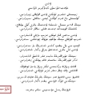

»
سىز تېخى كىرمىدىڭىز
كىرىش
تىزىملىتىش
|
مۇلازىمەتلەر
|
تەۋسىيە
|
ئىزدەش
|
ياردەم
|
مېدال مەركىزى
مۇلازىمەتلەر
ئۇسلۇپ
wind
قىسقا ئۇچۇر
قۇبۇل ساندۇقى
يوللاش ساندۇقى
ئىز قوغلاش
يېڭى ئۇچۇر يېزىش
تىزگىن تاختا
باش بەت
ماتىرىيال تەھرىرلەش
ماتىرىيال كۆرۈش
دوستلار قاتارى
ھوقوق كۆرۈش
ئالتۇن باشقۇرۇش
ئالتۇن باشقۇرۇش
نۇمۇر ئالماشتۇرۇش
ئەزا گۇرۇپىسى سېتىۋېلىش
ساقلىغۇچ
تېمىلىرىم
سىتاتىستىكا
ئاساسىي سىتاتىستىكا
IP سىتاتىستىكىسى
باشقۇرغۇچىلار
باشقۇرۇش ئەھۋالى
توردىكىلەر
ئەزا دەرىجىسى
سەھىپە دەرىجىسى
يازما دەرىجىسى
باغداش باش بېتى
|
خەۋەر - ئۇچۇر
|
ناخشا - مۇزىكا
|
ئېكران
|
ئەدەبىيات
|
ئۆي بىزەش
|
تېما بىزەكلىرى
ئۇسلۇپ
wind
قىسقا ئۇچۇر
قۇبۇل ساندۇقى
يوللاش ساندۇقى
ئىز قوغلاش
يېڭى ئۇچۇر يېزىش
تىزگىن تاختا
باش بەت
ماتىرىيال تەھرىرلەش
ماتىرىيال كۆرۈش
دوستلار قاتارى
ھوقوق كۆرۈش
ئالتۇن باشقۇرۇش
ئالتۇن باشقۇرۇش
نۇمۇر ئالماشتۇرۇش
ئەزا گۇرۇپىسى سېتىۋېلىش
ساقلىغۇچ
تېمىلىرىم
سىتاتىستىكا
ئاساسىي سىتاتىستىكا
IP سىتاتىستىكىسى
باشقۇرغۇچىلار
باشقۇرۇش ئەھۋالى
توردىكىلەر
ئەزا دەرىجىسى
سەھىپە دەرىجىسى
يازما دەرىجىسى
wind
بەس بەس مۇنازىرە
تارىخ بەتلىرى
خەۋەر ئۇچۇرلار
ئۇيغۇرنىڭ كۆزى
مەشھۇر شەخسلەر
ئەدەبىي ئەسەرلەر
Bagdax bbs
»
تورداشلار ئىجادىيتى
»
لۈكچەك(ھېكايە)
بۇ تېما 1416 قېتىم كۆرۈلدى
يېڭى تېما
IE دا ساقلىۋېلىش
|
باش بەت قىلىش
|
تېما ساقلىغۇچتا ساقلاش
|
ئالدىنقى تېما
|
كىيىنكى تېما
kayguluk
دەرىجىسى :
يىڭى ئەزا
UID نۇمۇرى : 2942
نادىر تېما :
0
يازما سانى :
11
شۆھرەت:
60 كىشىلىك
مۇنبەرپۇلى:
70 سوم
تۆھپە:
35 ھەسسىلىك
ياخشى باھا:
35 نۇقتا
توردىكى ۋاقتى : 28(سائەت)
تىزىملاتقان ۋاقىت:2011-08-20
ئاخىرقى كىرگىنى:2012-04-14
خەت چوڭلىقى :
كىچىك
نورمال
چوڭ
لۈكچەك(ھېكايە)
لۈكچەك
(ھېكايە)
ئابدۇۋەلى مەخسۇت
1
ئاتقاشتى يېزىسىنىڭ جەنۇبى چېتى سۇ يايدى مەھەللىسى دىيىلىدۇ.سۇ يايدى مەھەللىسىنىڭ ئايىغى تازنىڭ قۇماق بېشىنى ئەسكە سالىدىغان كەڭرى كەتكەن شورتاڭلىق،شورتاڭلىقتا يۇلغۇن ۋە ئاندا-ساندا كۆزگە چېلىقىپ قالىدىغان شاخشاق قۇمۇش،تېكەقىز،زاغزاق...قاتارلىق زەي ئوتلىرىنىڭ ئارىسىدىن شەكىللەنگەن يالغۇز ئاياغ يولنى بويلاپ ماڭسىڭىز قۇملۇققا تۇتاش دىگۈدەك بىر دۆڭنىڭ باغرىدا ئەتراپىدا ھېچقانداق توسۇق بولمىغان،خام كېسەكتىن سېلىنىپ چىرايلىق سۇۋالغان،ئالدىغا قالىق چىقىرىلغان ئەپچىلگىنە يالغۇز تام-توختى بازغاننىڭ ئۆيى قارىماققا خۇددى قۇم دېڭىزىدا قىرغاققا چىقىپ قالغان تەنھا قېيىقتەك كۆز ئالدىڭىزدا نامايەن بولىدۇ.بۇ ئۆينىڭ ئىگىسى توختى بازغان مىجەزى مەھەللە-كۇيدىكى ھېچكىمنىڭكىگە ئوخشىمايدىغان ئادەم بولغاچقا ئەتەي مۇشۇنداق چەت ياقىغا چىقىۋالدىمىكىن.گەپ تالىشىشقا ئامراق سەھرالىقلار ئاغزىدا مەھەللىدىكى تۆت كاللا بىر يەرگە كەلدىمانى توختاخۇن ۋە ئۇنىڭ بىردىنبىر ھەمراھى بولغان تىلى سېمىز ئوغلى توغرىسىدا پاراڭ بولماي قالمايدۇ:
-بىر گاچا بالىسىدىن بۆلەك ھېچكىمگە ئوشۇق-تۆشۈك گەپمۇ قىلمايدۇ،مەھەللىدىكى ھېچكىم بىلەنمۇ ئارىلاشمايدۇ،ھېچكىشىگە سىرمۇ بەرمەيدۇ دېسە ماۋۇ توختى تۆمۈرچى،خۇدايا تۆۋە دېمىسە ئەمدى،-دەپ گەپ تەشتى قانجۇق لەقەملىك شەمى.شۇنىڭ بىلەن ھەر كۈنى دېسىمۇ تۈگىمەيدىغان يەنە شۇ توختاخۇننىڭ پارىڭىنىڭ پىلتىسىغا ئوت تۇتاشتى:
-دېمىسىمۇ بېشىمغا قۇلاق چىققاننىڭ ياقى ئۇنىڭ ئاشۇ بالىسىدىن باشقا بىر كىشىگە سۆزلىگىنىنى زادى ئاڭلاپ باقماپتىمەن مەن.
-توختاخۇننىڭ بالىسى بېيكەن دەپمۇ ئاڭلىماۋدۇق،بۇ بالىنىڭ ئاپىسى كىمدۇ؟ئۇزاغىل يازدا تىمتاس يوقاپ كېتىۋىدى،كۈز مەيلى بوغاندا شۇ بالىنى ئەرەشتۈرۈپ پەيدا بوپ قالدى دىسە.
-ۋايتاڭەي،ئىشقىلىپ توختاخۇن ئۆزى تۆمۈردىن سوقۇۋالغان بالا ئەمەس بۇ.
-خەنسۇدىن بېقىۋېپتىمىشقۇ.
-قوڭۇڭغا مۇشتلاپ گەپ تاپىدىغانغا يامان ئۇستىكەن سىنەي ئاقى.قالاپ باقە ھەي،توختاخۇننىڭ مۇت ئۆزى ئانىڭ چىراي-تۇرقى.
-توختاخۇننىڭ ئاتىسىنىڭ ئېتى بازغىناخۇن ئوخشىمامتىكە؟
-ساراڭمۇ سەنەي شەمەك،ئەشنا دەپما ئات قويامدۇ بىر يەردە؟
-ئۇ ماۋۇ مەگىت پاڭقۇشنىڭ قېينانىسى سارايلامنىڭ باشقا ئاتىدىن بولغان قېرىندىشىكەن دەۋاتىتى رەمەتلىك كېپىلىخان چوڭپام.شۇندا بولغاندا سارىخان مامۇش-توختى مامۇش بولىدۇ..
-باشقا ئاتىدىن دەۋاتمامتىڭ ھەي؟ ئۇنىڭ ئاتىسى مامۇش بولمايدۇ بۇرالقى.
-ئۇندا بوغاندا قالغان ئشىنى بىر توختاخۇننى تۇغقان ئاپىسى،يەنە بىرسى خۇدايىم ئۆزى بىلگۈدەك جۇمۇ ئەمىسە.ئىشقىلىپ مەن تۇغۇلۇپ ئەقلىمگە كەلسەم مۇشۇ مەھەللىدە بولقا ئوينۇتۇپ ئات تاقىلاپ يۇرۇيدىكەنغۇ بۇ ئەدەم.
-قىزىق دەيمە،سۇ يايدىدا مۇشۇ ئادەملا ئۆيىنى ھەر يىلى ئەتىيازدا بىر قېتىم سۇۋايدۇ.
-يەنە كېلىپ كالا تېزىكىدە لاي ئېتىدىغىنى بەك ئۆمۇسە.
-بىر كىم غىزاغا قىشقىرسى-زە،چاي ئىچىۋاپتىمەن دەپ ئىللا-بىللا بۇسۇغا ئاتلىمايدىكەن بۇ.
-چېيىمۇ ھېچكىمنىڭكىگە ئوخشىمايدىكەن دىسە توۋا.ئا بىر كۈنى بىر ئىش بىلەن كىرىپتىمەنكەن،نەق داستىخىنىغا چۈشۈپ قېپتىمە.بىر چىنە چاينى ئالدىمغا قويدى.ئاشۇ مەنتەڭگە قاراچاي سېپ دەملىگەندەكلا بىرمە.ئىچمەي دىسەم مۇسۇرمانداچىلىقتا سەت تۇرامىكىن دەپ بىر ژۇتتۇم،ئىككى ژۇتتۇم.قالىسام تەمى سۈت-قايماققىمۇ،چايغىمۇ ئوخشاپ-ئوخشىمايدىغانلاڭكىن بىر ژۇتقۇلۇق.يامان سەت تېتىپ كەتتى.ئۆيگە كېلىپ خۇتۇنغا توختاخۇننىڭ چېيىدەك چايدىن بىر قاينات دېسەم ھە دەۋاتىتى.كېلىشتۇرامماپتۇ.
-خۇتۇنۇڭنى توختاخۇنغا شاگىرتلىققا بېرەمسا يا زۇبدۇن؟...
قىزىق كېتىۋاتقان سوقا-سۆھبەتنىڭ ئاخىرى جىدەلگە ئايلىنىپ كەتكىلى تاس قالدى.ئىمانىخاننىڭ ماگىزىنىنىڭ تېمىنى يۆلەپ ئەتىيازنىڭ ئاپتىپىغا قاقلىنىپ ئولتۇرۇشقانلار زۇبدۇن بىلەن شەمىنى بىر تەستە ئايرىۋالدى.
توختاخۇن بازغان توغرىسىدا مىش-مىشلار تولا.ئۇنى تۇغما مۇشۇ يەرلىك دىگۈچىلەرمۇ،تاغ ئارقىسىدىن كەپتىكەن دىگۈچىلەرمۇ،ئەنجان تەرەپتىن كەلگەنكەن دىگۈچىلەرمۇ ئۆز گېپىنىڭ راستلىقىنى ئىسپاتلاش ئۈچۈن كۆپۈشۈپ تۇرۇپ ئوخشىمىغان پەتىۋالىرىنى قويۇشىدۇ.ئۇنىڭ قايەردىكىن بىر يەرلەردە ئەسكەرلىككە تۇتۇلۇپ جەڭلەرگە كىرگەنلىكى توغرىسىدىكى پاراڭنى ھەممەيلەن زوق-شوقى بىلەن سۆزلىشىدۇ،ئاڭلىشىدۇ.ھېچكىمنىڭكىگە ئوخشىمايدىغان قىزىل دوپپىسى ۋە بويتاقلىقىنى چاندۇرمايدىغان ئاپئاق كۆينىكىنىڭ ئۈستىگە پويزىسى بار يېلىڭ قارا جىلىتكىسىنى كىيىپ سېغىن كالىسى بار بىر كىملەرنىڭ ئۆيىدىن چاشكىدا سۈت كۆتىرىپ سىپايە مېڭىپ ئۆتىدىغان توختاخۇنغا ھەۋەس ۋە قىزىقسىنىش بىلەن تىكىلىدىغان كۆزلەرمۇ تولا.ياش ۋاقتىدىكى توختاخۇننىڭ ئاتنىڭ قارنىغا چۈشۈۋېلىپ تۇرۇپ دۈشمەنگە ئوق ئۈزىدىغان قالتىس ماھارىتى بار جەڭچى بولغانلىقى،بىر قېتىملىق جەڭدە ئەسىرگە چۈشۈپ قالغانلىقى،قارا قىشتا ئۆتۈكىنى سالدۇرىۋېلىپ قاماپ قويغان يەردىن مۇشۇ مەھەللىگە يالاڭاياق قار كېچىپ قېچىپ كەلگەنلىكى،تۈن تەڭدە ئۇنىڭغا ئىشىك ئاچقان سىڭلىسى دەلتىنىڭ ئۈششۈپ قالغان پۇتنى كاڭمۇرىغا قاقلىغانلىقى،شۇ سەۋەپلىك توختاخۇننىڭ پۇتىنىڭ بارماقلىرى ئوتتا ئېرىگەن توڭ ياغدەك ئېقىپ كېتىپ ‹مۇشتاق›بولۇپ قالغانلىقى...توغرىسىدا پاراڭلار بولىدۇ.
توختاخۇن 60لاردىن ھالقىغان،قارىماققا تىپىك ئۇيغۇر دېھقىنىغا خاس مىس يۈز،ئۇستىخانلىرى كېلىشكەن ئادەم.ئادەتتە كەمسۆز،مىسكىن كۆرۈندۇ.دۇكىنىغا كەلگەن ھاجەتمەنلەرگە يېقىملىق بىر كۈلكىسى بىلەن ئىلتىپات كۆرسىتىپ ھاجەتمەننىڭ تەلىپىنى ئورا كۆزلىرىنى تىكىپ تۇرۇپ ئاڭلايدۇ.زۆرۈر تېپىلسا قىسقا بىر ئىككى جۈملە بىلەن گەپ سورىغان ياكى چۈشەنچە بەرگەننى ھېساپقا ئالمىغاندا دەررۇ كۆرگەن كىشى ئۇنى تىلسىز بىچارىمىكىن دەپ قالىدۇ.ئەمما باشقىلارغا بىلىندۈرمىگىنى بىلەن ئۇنىڭ ئىچى بىر دۇنيا.كۆرگەن-بىلگەنلىرىنى ئەسلىسە ئۇ ئۆزىنى مىڭ ياشقا كىرگەندەك ھېس قىلىدۇ.ئۇ خۇشاللىقىنى،خاپىلىقىنى،قايغۇسى ۋە ئەلەملىرىنى...ھايات مۇساپىسىدە كۆرگەن-بىلگەنلىرىنىڭ ھەممىسىنى پەقەت ئۆزىنىڭ بىردىن بىر قۇۋۇنچى-يالغۇز ئوغلى زاكىرغىلا سۆزلەپ بېرىپ كۆنگەن، گۈدەك بالىنىڭ مۇنداقلا سورىغان بىر ئېغىز سوئالىغا جاۋابەن قىلىدىغان گەپلىرىنىڭ باش-ئاخىرى ئۇزىراپ ئۇزاق ئۆتمۈشكە،ئازاپ ۋە بەخت گىرەلىشىپ كەتكەن قىسمەتلەرگىچە سوزۇلىدۇ.پۇشۇلداپ يەل پۈۋلەيدىغان كەۋرەكنىڭ نوكىشىگە تۇتاش ئۇچاقتىكى گۈركىرەپ كۆيگەن كۆكۈچ ئوتنىڭ تەپتىدە چوغ ھالىتىگە كەلگەن سەندەلدىكى قىپقىزىل تۆمۈر ئۇچقۇنلارنى چاچرىتىدۇ،تېخى كۈچىدىن قالمىغان تۈكلۈك بىلەكنىڭ كۈچىدە ئويناۋاتقان بولقا رېتىملىق تاقىلدايدۇ:
-قارا بالام،بىرەر كىمگە يىڭنە چاغلىق ئوقەتكە،ھەتتا سالام-سەھەتكىمۇ قەرزدار بولماي نوچى ئۆتكەن توختى ئىدىم. گومىنداڭنىڭ تۈرمىسىدە پۈكۈلمىگەن قەددىم يىللار قوينىدا پۈكۈلدى...
ساڭا ئېيىتىپ بېرەي ئوغلۇم،بۇ خىلۋەتتە چۈمۈلىدەك مىدىراپ ئۆزىنىڭ ۋە سېنىڭ غېمىڭ ئۈچۈن ئوتتا كۆيۈپ،بازغاندا سوقۇلۇپ ئۆتىۋاتقان داداڭ ياشلىقىدا كارامەت ئادەم بولغان يىتىم ئىدى...
سۇپىچاقتا قىيسايغىنىچە ئاسلاندەك پۇشۇلداپ ئۇيقۇغا كەتكەن بالىدىن بىخەۋەر دادىنىڭ ھېكايىسى ئەنە شۇنداق ھاياجان ۋە ھەۋەس ئىچىدە باشلىنىدۇ.ئۇنىڭ ھېكايىلىرىدە يۇرت تارىخىدا يۇلتۇزدەك پارلاپ،چاقماقتەك چاقناپ ۋە بوراندەك گۈركىرەپ ئۆتكەن سادىر قاڭرۇق،سىيت گاڭگۇڭ ۋە غېنى ئوغرىلاردەك شىرمەت ئەركەكلەر ۋە شۇنىڭدەكلەر پەخىرلىنىپ تىلغا ئېلىنىدۇ:
-بىزنىڭ زامانىمىزدا ئەرلەرگە لۈكچەك،ئاياللارغا گاڭ(داڭ)دېگەن لەقەم ئاسانلىقچە نېسىپ بولمايتتى بالام. بۇ لەقەمگە ساھىب بولغان ئادەملەر مەرت-مەردانىلىك،ھەقنى ياقلاش،ئاجىز-ئۇرۇقلار ۋە بوزەك قىلىنغانلارنى قوغداشتەك چوڭ ئىشلاردىن تارتىپ،يۇرت ئىچىدە ئۆتكۈزۈلىدىغان ھەر تۈرلۈك ئادىل ۋە ئاشكارە بەس-تالاشلارغا ئارىلىشاتتى،ئۆز ماھارىتى ۋە نوچىلىقىنى ئەركەكلەر مەيدانىدا نامايەن قىلىشاتتى.ئۆزلۈك ۋە كىملىكىنى،يۇرت غۇرۇرىنى قوغداش ئۈچۈن كۆكرەك كېرىشاتتى،ھەتتا قان تۆكۈشۈپ جان پىدا قىلىشاتتى.بۇنداقلار يۇرت ئىچىدە سورۇننىڭ تۆرىدە،گەپ-سۆزى ئۆتىدىغان ۋە كېسىدىغانلاردىن سانىلاتتى.داداڭمۇ ياشلىقىدا ئېغىزغا پۈتۈن كەلگۈدەك توختى ئىدى جۇمۇ...
دادىسىنىڭ تۈگىمەس پاراڭلىرىنى ئاڭلاپ يېتىپ ئۇخلاپ قالغان بۇ بالا دەل بىز ھېكايىسىنى قىلماقچى بولغان زاكىر گاچا.لەقىمى گاچا بولغىنى بىلەن بەك دەپ كەتكۈدەك گاچىمۇ ئەمەس،پەقەت يېزىقتا ئىپادىلەش قىيىن بولسىمۇ نەق مەيداندا بولسا دوراپ بەرگىلى بولغۇدەك دەرىجىدە-تىلى سېمىزرەك بولغىنى ئۈچۈن بەزى تاۋۇشلارنى ئوخشىمايدىغانراق سۆزلەيدىغان،شۇ بىر ئەيىپى سەۋەپلىك دادىسىدىنمۇ ئۆتە جىمغۇر چوڭ بولغان بىر ئىنسان.
توختاخۇننىڭ ‹كاپىراتسىيە ئېزىۋېتىدۇ بالام›دەپ زورلاپ تۇرۇۋېلىشى بىلەن تەنتەربىيەدىن باشقا دەرسلەردە ئۆردەككە سۇ يۇقمىغاندەك ھېچنىمە يۇقماي دىگۈدەك مەھەللىدىكى بەش يىلدا تۈگەيدىغان مەكتەپنى يەتتە يىل ئوقۇپ تۈگەتكەن زاكىر توختىغا نەدىن يۇققان ھەۋەسكىن،ئون نەچچە ياشلىق گۈدەك ۋاقتلىرىدىلا ئۆزى چوڭ بولغان دۆڭنىڭ ئارقىسىدا ھەر كۈنى دىگۈدەك ساراڭدەك يۈگرەپ-چېپىپ،توختاخۇننىڭ يوغان بازغىنىنى ئۇياق-بۇ ياققا شىلتىپ، يارىيار ھارۋىنىڭ تاشلاندۇق چاقىنى بېشىىدىن ھالقىتىپ كۆتىرىپ،خام كېسەكنى دەسسەپ-مۇشتلاپ ئېزىپ،ئاسمانغا
ۋە دەرەخلەرگە پەشۋا ئېتىپ،موللاق ئېتىپ تامغا پۇتىنى تىرەپ باشچىلاپ تۇرۇپ،تامغا سەكرەپ يامىشىپ...دېگەندەك يۈرگەنلىرى بار. شۇ چاغلاردا مەھەللىدىكىلەرنىڭ ئاغزىدا‹توختى بازغاننىڭ بالىسى زاكىر ئاززا-ماززا بولۇپ قاپتۇ،دەررۇ پېرە ئويناتمىسا ياكى رەدنامە ئوقۇتمىسا بولمىغۇدەك...›دېگەندەك پىچىر-پىچىر پاراڭلارمۇ پەيدا بولغان.توختاخۇن تۆمۈرچى ئاغزىدا تۇغۇۋالغاندەكلا كۆيۈپ،ئانىسىزلىقىنى بىلىندۈرمەي پۈدەپ- سىپاپ چوڭ قىلغان ئەنە شۇ بالا چوپ-چوڭلا يىگىت بولدى،دەررۇ ئاڭلىماققا چۈشىنىكسىز بىلىنىدىغان كەمتۈك تىلىمۇ مەھەللە كۇينىڭ قۇلىقىغا سىڭىپ كەتتى.يىللارنىڭ قوينىدا توختاخۇننىڭ سەندىلىدىن چىققاندەك چىڭ ۋە بەردەم چوڭ بولغان زاكىر ئۇنىڭ فامىلىسىگە ئوخشاپ قالغان گاچا لەقىمى بىلەن قوشۇلۇپ دەسلەپ مەھەللە كۇيدا،بارا-بارا ئاتقاشتىدا تونۇلۇشقا باشلىدى.بۇرۇنقى شۈكلەڭگۈلىكىنىڭ ئورنىغا ئۆزىگە بولغان ئىشەنچ ۋە دېدىللىك ئالماشقان ئىدى.ناتونۇش بىراۋلار ئۇنىڭدىن ئات-جۈنىنى سورىسىمۇ تىكىلىپ تۇرۇپ،زۇۋانىنى يوغان چىقىرىپ جاۋاپ قايتۇراتتى:
-ئېتىڭ نىمۇ ھوي؟
-زاكىل گاتا.توختى تۆمۈلتىنىڭ....
2
يەكشەنبەبازار،ئاتقاشتىنىڭ بازىرى دېسە يىراق-يېقىندىكى يۇرتلاردىمۇ خېلى نامى بار تىپىك يېزا بازىرى.
- تەيپىنەمنىڭ ۋاقتىدا بازار تۈگمەنقېشىدا بولاكەنتۇق.بىر بازار كۈنلۈكتە شاۋاز ئەلەم ئاتلىق بازارغا بېرىپتۇ.كەچتە ياناشىدا كېلىپ قارىسا ئېتى باغلاپ قويغان يېرىدە يوق تۇرامىش.ئانچىكىم ئىزەدەپ ئېتىنىڭ دېرىكىنى ئالامماي ئامالسىز ئۆيىگە پىيادە قايتقان شاۋاز ئەلەم قۇرساق كۈپۈكىدە:‹خەپ!مۇشۇ بازارنى ئۆيۈمنىڭ قۇڭىغا كۈچۈرۈپ ئەكەتمىسەم....›دەپ ئانت ئىچىپتۇ.كېلەركى بازار كۈنىدىن باشلاپ پاۋاللىنىڭ قۇملۇقىدا چېلىشىش،مۇشتلىشىش،ئوغلاق تارتىش،قوشقار سوقۇشتۇرۇش،ئىت تالاشتۇرۇش،ساغادى،مەشرەپ...دېگەندەك رەڭگى-تۈرلۈك ئويۇن-تاماششىلارنى تەشكىللەپ قىزىتىۋېتىپتۇ.شۇنداق قىلىپ بىر زامان ئۆتكەندىن كېيىن تۈگمەنقېشىدىكى بازار ئەدەم باماي چۆلدەرەپ ئەمەلدىن قېپتىكەن،شۇنىڭ يۈزى ئاتقاشتىنىڭ بازىرى پەيدا بوپتىكەنمىش-دەپ ھېكايە قىلىشىدۇ بوۋايلار. ھەر يەكشەنبىسى يىراق يېقىندىكىلەر ئات-ئېشەكلىرىنى چاپتۇرۇپ، كالا ھارۋىلىرىنى ھەيدىشىپ،ئاندا-ساندا كىشىلەر ۋېلىسىپىتلىرىنى مىنىشىپ ۋە پىيادە سوكۇلداپ بىر كىم ئېيتقاندەكلا بازارغا ئالدىرىشىدۇ.ھەر كىم ئۆز قىزىقىش ھەۋەسلىرى بويىچە سودا-سېتىق،تاماششالىرىنى قىلىشىدۇ. بەرپا بولۇشىدىلا بەس-تالاش ۋە ھەرخىل مۇسابىقىلەر ئارقىلىق پەيدا بولغان بازار بولغاچقىمىكىن ھىچقانداق سودىلىقى يوق كىشىلەر ئۈچۈنمۇ بۇ بازاردىن كۆڭۈل خۇشى تېپىلىدۇ.توخۇ بازىرىدا خورازلار شىددەت بىلەن جەڭگە چۈشسە،موللىخان گاڭنىڭ قۇمىدا بۇقىدەك تۈرتۈشۈپ بەل تۇتۇشىدىغانلار بار...قىسقىسى پات-پاتلا رەڭگى-تۈرلۈك بەس مۇسابىقىلەر تەبىئىلا ئۇچراپ تۇرىدۇ.كەچكىچە قوپماي ئولتۇرۇپ تۇخۇم چېكىشىپ قاتار ئوينايدىغانلار:قايسىدۇر بىر داڭلىق ئويۇنچىنىڭ يەتتە ئەجدادىدىن باشلاپ سۈرۈشتۈرۈپ زېرىكمەي پاراڭ سوقىشىدىغان كەپتەرۋازلار:ئاندا-ساندا كەپ قالىدىغان مەدداھ ۋە سەرۋازلارنىڭ ئويۇنىنى بازار تارقىغۇچە كۆرىدىغان ھېرىسمەنلەر...بار.بازار-سودا-سېتىق سورۇنى بولۇپلا قالماي يەنە مەدەنىيەت-سەنئەت،ئۇچۇر تارقىتىش سورۇنى.ھەركىم بازاردا كۆرگەن-ئاڭلىغانلىرىنى يەنە بىر بازار كۈنىگىچە زوق-شوق بىلەن پاراڭ قىلىشىدۇ.
ئاتقاشتىنىڭ يەكشەنبە بازىرى قايناق سودا سېتىقتىن بۆلەك يەنە ھەپتىدە بىر كېلىپ يىقىلىپ قالغۇدەك ئىچىشىۋالىدىغان مەستلەر ۋە توپ بولۇپ مۇشتلىشىدىغانلارنىڭ تاماششاسى بىلەنمۇ ئاۋات.كوچىنىڭ بۇ بېشىدا توپا ۋە قۇسۇققا مىلىنىپ رەسۋالاشقان مەستنىڭ ئالا-تاغىل ناخشىسى،كىملەرنىدۇر بەدەۋى تىللار بىلەن سەتلەپ تىللىشىنى،شاپاق-شالتاقلارنى ئېتىپ ئارام بەرمەيۋاتقان بالىلارنى قوغلاش ئۈچۈن تىركاڭشىپ پالاقلاپ يىقىلىشىنى...تاماششا قىلىپ پاراقلاپ كۈلۈشىۋاتقان يېزىلىقلار تۇيۇقسىز بىر خەۋەر بىلەن دۈررىدە بازارنىڭ يەنە بىر پشىگە ئېقىشىدۇ.چۈنكى ئۇ ياقتا بۇ يەردىكى ئۆلۈمتۈك مەستنىڭ ئويۇنىدىنمۇ قىزىقراق بېلەتسىز ئويۇن قويۇلۇۋاتقان بولىدۇ-قاش-قاپىقى يېرىلغان كىملەرنىڭدۇر سۈرگۈن تالاشقان قوشقاردەك،مىكيان تالاشقان خورازلاردەك نوچىلىق بىلەن بازلىشى ۋە مۇشتلىشىشى ئەۋجىگە چىقدۇ.گاھىدا يەككە،گاھىدا يەتتە-سەككىزدىن ئىككى تەرەپ بولۇپ توپلىشىپ مۇشتلىشىۋاتقانلارنىڭ جېدىلى ھەتتا بىرەر سائەتكىچە داۋاملىشىدۇ.قاچاندىدۇر بىر تەرەپ مۇشت-پەشۋاغا چىدىماي سورۇندىن چىققان خورازدەك قاچقاندا ۋە ياكى نەمەتخان سوجاڭ،ئامۇت ساقچىلارنىڭ ئاسمانغا قارىتىپ ئاتقان تاپانچىسىدىن پاڭ-پاڭ قىلىپ ئوق چىققاندىلا جەڭ ئاندىن تىنجىيدۇ.بايادىن بۇيان جاھانغا پاتمىغان سەركىدەك ھەيۋە بىلەن تىرىتتەكلىگەنلەر قازان قارىسى يۇققاندەك سەتلىشىپ كۆكەرگەن تەلەتىنى پۈرۈشتۈرۈپ،ئاغزى-بۇرنىدىن ئاققان قانلىرىنى يەڭلىرىگە ۋە پەشلىرىگە سۈرتكەچ ئۆز-ئارا ھۆمىيىشىپ،نەمەتخان سوجاڭ ۋە ئامۇت ساقچىلارنىڭ پاتاڭلىرىغا قويغان شاپىلاقلىرىدا دەلدۈگۈنۈپ،قوڭلىرىغا تەككەن يوغان باجىنگىرنىڭ زەربىسىدىن پالاقلاپ يۇگرىگەندەك قىلىپ ساقچىخانىغا مېڭىشىدۇ.
بۇنداق مۇشتلاشلارنىڭ سەۋەپلىرىمۇ ئاددى ۋە ھەر خىل.‹بىزنىڭ مەھەللىنىڭ خورىزى سىلەرنىڭكىدىن بۇرۇن قىچقىرىدۇ...›دېگەندەك تايىنى يوق گەپ تالىشىشتىن باشلىنىدىغان يۇرتۋازلىق ۋە مەنمەنلىكتىن تارتىپ يوغان سېرىق مارجان ئېسىپ ئوسمىنى دەمدەك قويغان ‹نىشان›لارنى تالىشىشقىچە،ئوچۇقچىلىققا قىزىل شەلپەر بىلەن توسۇپلا ياسالغان قاۋاقلاردىكى غەۋغا-نىزادىن تارتىپ نەشپۈتلۈك باغدا تۆت ھۇشۇق بىلەن قىزىيدىغان تاۋكادىكى خۇسۇمەت-قۇرساق كۆپۈكى،ھەتتا قوغۇن-تاۋۇز پىششىقىدا باققاللارنىڭ ئالدىدا ئوينۇلىدىغان تېشىشمەك،ئېتىشماق ۋە ئاق-قىزىل ئويۇنلىرى سەۋەبىدىن كېلىپ چىققان چىدىماسلىق...قاتارلىقلارنىڭ ھەممىسى ئەنە شۇنداق ماجرالارنىڭ پىلتىسى...
زاكىر توختىلار تەڭتۈشلىرى بىلەن بازار ئارىلاپ،ئۇنىڭدىن-بۇنىڭدىن تېتىشقاچ شاڭخو پاراڭلار بىلەن كەلمەكتە.دېھقان ئادىتى بويىچە ئاشلىق بازىرى ۋە چارۋا بازىرىدا بىرەر دەمدىن تۇرۇپ نەرقى-ناۋا ئاڭلىشىپ بولغاندىن كېيىن دوقمۇشتا يول قىرغىقىدا توختاشتى.
-قۇۋان جونداق، ئەۋەتىن سامسىدىن 50نى يەيمە دەپ پو ئېتىۋاتىتىڭ.مانا ئالماس ناۋاينىڭ تونۇرىغىمۇ كەپ قالدۇق،گېپىڭ گەپمۇ يەھ؟
-چاتاق يوق.
-يەپ بولاممىساڭچۇ؟
-سامسىنىڭ پۇلىنى ئۆزەم تۆلەيمە.
-باكادا ئىش يوق.سېنىڭ سامسا يىگىنىڭنى تاماششا قىغىلى يەكشەنبازاغا كەپتۇقما بىز؟
-قايداق قىلىمە ئەمىسە؟
-ئەگەرچەندە 50سامسىنى سەن يەپ بوساڭ سامسا پۇلىنى تۆلەيمە،يانا تۆپىدىن مۇشۇ ئەل-ئاغاينە باللىنى سامسىغا تويغۇزىمە.ناۋاداكېرەك يەپ بوللاممىساڭ ئۆزەڭ يىگەن ھەم بىز يىگەننىڭ ھەممىنىڭ پۇلىنى تۆلەيسە،قانداق؟
-ھېساپ!ئەكە قولۇڭنى!
قۇۋان جونداق بىلەن مۇراۋدۇن شالدام ئالقانلىرىغا تۈكۈرۈشۈپ توپىغا سۈركەشتى ۋە قول ئېلىشىپ ناۋايخانا تەرەپكە قەدەم بېسىشىغا زاكىر گاچا تەرىپىدىن توسۇۋېلىندى،زاكىر گاچىنىڭ ھەممىگە تونۇشلۇق سېمىز تىلىدىن سەت ھاقارەتلەر ياغاتتى.:
-تارانچىگىڭنى چاقايمۇ؟ئاچاڭنى پالان قىلايمۇ جونداق.ما پۇستان نىمەمدىن قانچىنى يەپ بولالايسە؟ئۆيۈڭدە يىگىدەك پۆرەك نېنىڭمۇ يوق جونداق،سامسىغا بىر تويۇۋالاي دەمسە؟
-مەن دېمىدىم،مۇراۋدۇن ئەشنا دەپ...-مىيىقىدا بىر سەت ھىجاق قېتىپ قالغان جونداق كۈز چۆجىسىدەك شۈمشەيدى.زاكىر گاچىنىڭ ئەسنايى سەل پەسكارىغا چۈشتى:
-شەيتانمۇ يېغى ۋوسا توپىنىمۇ يەيمە دەپتىكە.يامان بوساڭ ماڭە، بىر موچەنلىك شۇپۇرتەك سامسا ئەمەس،ئىككى موچەنلىك ئاق ناندىن بەسلىشىمە سەن بىلەن. قانچىنى يەپ بولالايسە؟
جونداق كىرلاش گەدەن چېچىنى قاشلىغاچ يەڭگىلباشتىن ھىجايدى.ئەتراپتىكىلەرنىڭ سالا-سۈلھىسى بىلەن 30نى يەپ بولىدىغانغا شەرتلەشتى.بازارغا مىنىپ كەلگەن سۇمۇرۇغ ماركىلىق ۋېلىسىپىتلىرىنى دو تىكىشتى.بازارنىڭ كۈنچىقىش يېقىدىكى چوڭ ئۆستەڭنىڭ بويى ئادەملەر بىلەن قايناپ كەتتى.ئىككى ئادەم زاڭاققا تىرەپ كۆتىرىپ كېلىپ قۇچىقىدا تۇتۇپ ئولتۇرغان نانغا كەينىنى قىلىپ ئولتۇرغان قۇۋان جونداق ناننى پوشكالدەك يۆگىلەپ،پاسار يىگەن كالىدەك تېگىشكە باشلىدى.ئۇنىڭ كۆپۈشكەن قوۋۇزلىرى ھېلىلا يىرتىلىپ كېتىدىغاندەك لوپۇلدايتتى.بىر تەرەپتىن چاينىغاچ ئېرىقنىڭ لاي سۈيىدىن ئوچۇملاپ ئېلىپ ئىڭەك-جاۋغايلىرىدىن ساقىتىپ تۇرۇپ سۈمۈرەتتى. جونداق ھەر مىنۇتتا دىگۈدەك قولىنى كەينىگە سۇنغىنىدا ئەتراپتىن بىردەك شاۋ-شۇۋ ئاۋازلار ئاڭلىناتتى...
قۇۋان جونداق قانسىراتمىغان ئۆپكىدەك قىزىرىپ،ئېسىلىپ،ھېقىلداپ،سەت كېكىرىپ ئولتۇرۇپ ئاخىرى بىر قۇچاق ناننى يەپ تۈگەتتى. ئەتراپتىن قىيقاس كۆتىرىلدى:
-بالاكىناي بۇ.نى زاماندىن بېرى نان كۆمىگەن ژىندۇ بۇ.
-ھەي خەقەي،بۇنىڭ قارنى قېرىنمۇ يە قەلەندەرنىڭ چاخالتىسىمۇ؟
-ھە يەقەي،قالاپ تۇرۇڭلا،ھېلى تەتۈر چىشمىسا قۇلىغىمنى چالمىدا كېسىپ بىرىمە مەن.
........
ئەنە شۇنداق دەتالاشلار ئىچىدە زاكىر گاچا ھېچنىمە بولمىغاندەك ھىجىيىپ تۇرغان قۇۋان جونداقنىڭ قولىنى سىقىپ دولىسىغا شاپىلاقلاپ قويدى-دە،پارقىراپ تۇرغان قارا ۋېلىسىپىتنىڭ رولىنى ئۇنىڭغا تۇتقازدى.شەنى ئالغان قوڭتاجىدەك خوش بوپ كەتكەن قۇۋان جونداق يەنە قىزىغان ئىدى:
-مەن بىلەن بەسلىشىدىغان،دو تىكىشىدىغانلار يەنە بامۇ؟ئەمدى مەن ساناپ تۇرۇپ يۈزنى ئۇسۇرىمە...
ئەتراپتىن پاراققىدە كۈلكە كۆتىرىلدى.موراۋدۇن شالدام مەيدىسىگە گۈپۈلدىتىپ مۇشتلاپ مەيدانغا چۈشتى.
-نېمەڭنى تىكىسە شالدام؟
-بىر پوقۇڭ بىر كوي.ساق يۈزنى چىقىرالىساڭ مانا پۇل،توقسان توققۇزدا توختاپ قالساڭ سەن بېرىسە،قانداق؟
-چاتاق يوق،ھېساپ.
-قوڭۇڭنى ماراپ ئولتۇرۇپ زاڭاق چۈشۈپ قاسا يانا بوممايدۇ جۇمۇ،بىر ئاش پىشىمىدا بىرنى ئۇسۇرساڭ ھېساپ ئەمەس.
-ئارىلىق بىر چۇگۇن قاينىمى بوسۇن.
-ياق،قاغا چامدىمى.
-تولا داڭقان پۇتى گەپ قىلمىغىنا شالدام.ئۇنچىلىك ۋاقتتا بىردىن ئۇسۇرالايدىغان تۇنياز توكورنىڭ مادىسى ئەمەس مەن.سەن ئۇسۇرە ئەمىسە،نېمەمنى دېسەڭ تىكىمە مەن!-قۇۋان جونداق كىچىك بالىدەك دومسايدى.
ئەتراپتىكىلەرنىڭ سالا قىلىشى بىلەن بىر چېكىم موخوركا يۆگىلىپ بولغۇچە ئارىلىقتا بىرنى ئۇسۇرۇپ بولىدىغان،ئاۋازى بەش ماڭدام نېرىدىن ئاڭلانغۇدەك چىقىدىغانغا شەرتلەشتى. ئىككى ئۆرۈم چېچى ئۇزۇن ئاق تۇمىقىدىن چىقىپ تۇرغان،ئاشۇ ئۇزۇن چېچىدىن باشقا پۈتۈن تۇرقى راۋرۇس ئەركەككىلا خاس بولغان موللىخان گاڭ(تاماششا كۆرۈۋاتقان ئالامان ئارىسىدىكى بىردىن بىر چىشى جىنىسلىق)ۋاقت ھېسابلىغۇچى رېپىرنىڭ رولىنى ئېلىپ،قۇراق لاتىدىن تىكىلگەن تاماكا خالتىسى ۋە كەسلەنگەن گېزىتىنى تومىقىنىڭ ئۈستىگە جايلاشتۇردى.تاراقلاپ تۇرىدىغان كۆك تىزىلار ساناققا مەسئۇل بولغان مەرۇپ باخشىغا تۇتقۇزۇلدى.قۇۋان جونداق ئۆستەڭ قىرىدا دۈم يېتىپ لاي سۇدىن بىر قۇرساق ئىچىۋېلىپ قوپۇپ قۇرسىقىنى بىر نەچچىنى چالغىتىۋالغاندىن كېيىن يۇمىلاق دائىرىنىڭ ئوتتۇرىسىدا تۇرۇپ ئىت چىشقان پەدىدە بىر پۇتىنى كۆتىرىۋېلىپ توختىماي يەل چىقىرىشقا باشلىدى.
-1...3...9...12... 17..21...28...
قۇۋان جۇنداقنىڭ پۇتى ھەر بىر كۆتىرىلىپ بىر ئىنجىق بىلەن تەڭ پەدە ئالماشتۇرغان ناساز سونايچىنىڭ مۇزىكىسىدەك ھەر قىسما ئاۋازدىكى جەرت،پەرت،دورت،قىڭڭڭ...قىلغان ئۇسۇرۇق بىلەن تەڭ ئەتراپتىن مەرۇپ باخشىغا قوشۇلۇپ ۋارقىراپ سانىغان ۋە ئۆزىنى تۇتالماي پاراقلاپ كۈلۈشكەن ئاۋازلار ئۈزۈلمەيتتى.بۇنداق مۇسابىقە،بۇنىڭدەك تاماششا جاھاننىڭ ھېچ يېرىدە يوقتۇ بەلكىم.كىشىلەر ئاغزى-بۇرنىنى توسۇۋېلىشىپ تۇرۇپ قۇرساقلىرى ئاغرىپ كەتكۈچە كۈلۈشتى.ئالبانىيە خورىزىنىڭكىدەك بوم زۇۋان بىلەن ئۆزىنى تۇتالماي ھوقۇلداپ كۈلكەچ توختىماي موخوركا يۆگەۋاتقان موللەك گاڭنىڭ موخوركىسىمۇ نەچچە قېتىم قەغىزىدىن تۆكۈلۈپ كەتتى.ناھايات ساناق يۈزگە توشتى.ئەتراپتىن جاھاننى كۆتىرىۋېتىدىغاندەك شاۋ-شۇۋ،قىيقاس-چوقان كۆتىرىلدى.
-يائاللا كارامەت،يا ھەزرەت...قوڭدىنمۇ ئۆتە قوڭكىناي بۇنىڭ قوڭى.
-قۇۋان جونداق دېمەي قۇۋان ئۇسۇرغاق دەيلى جۇمۇ سېنى بۇنىڭيۈزى.
-ماندا دېسەك تازا ئوختاسىغا چۈشمەيدۇ،قۇۋان پوق دەيلى.
-ھاھاھا،قۇۋان پوق قۇۋان پوق،بىر كويچەنگە بىر ئۇسۇرۇق...
مەرۇپ باخشى بىر تۇتام پۇلنى شاپىلىقىدىن قاس چىقىرىپ تۇرۇپ جونداقنىڭ ئالقىنىغا تۇتقۇزدى.
3
ئىككى چىشلىق كېۋەز كورىكىدەك ھىجىيىپ ئاغزىنى يۇمالماي قالغان قۇۋان جونداق زاكىر گاچا قاتارلىق ھەقەمسايىلىرىنى ئالماس ناۋاينىڭ سامسىخانىسىغا باشلىدى.
-جۇرۇڭلار ئاغاينىلە،قۇۋان پوقنىڭ قۇڭىنىڭ راھىتىنى كۆرىدىكەنمىز بۈگۈن.
-ھەي ئەدەملە،سامسا قانداراق تېتا ھە؟
-پۈتۈن بازانى سېسىتتى بۇ،ژىدى سامسىغا سىڭىپ كەتمەستە ئىششتىگراق تېگىلى جۇمۇ.
-ئۇسۇرۇپ تاپقان پۇل ھالالمىدۇ؟
-نېمىلا بولسا ما سامسا ھالال،بولە باللا.
يوغان لېگەندە كەلتۈرۈلگەن سامسىلار تۇشمۇتۇشتىن سونۇلغان قوللاردىن ئۆتۈپ قوۋۇزلاردا ئىشتاھا بىلەن چاينالدى.سامسىغا قول سۇنغان قۇۋان جونداقنىڭ قولىنى سىلكىپ تاشلىغان زاكىر گاچىنىڭ تەنىسىگە قوشۇلۇپ تۇشمۇتۇشتىن چىققان شاڭخو پاراڭلار ۋە سامسىخانىنىڭ ئىسلاش لەمپىسىنى كۆتىرىۋەتكۈدەك ئۈزۈلمەس كۈلكىلەر جونداقنى قىزىق سامسىدىنمۇ بەكرەك تەرلەتتى:
-تاتە قولۇڭنى!قىغچىنىڭ ئارىسىدەك دېۋەيلەۋېرەمسە يانا! ئىشتىنىڭغا چىقىرىپ سالىسە بىكا.ئابايا قارنىڭغا كىرىپ كەتكىنى بىر سىڭسۇن،ئەندىن كىنزە كېلە ژۇگۇ.
-دىمىسىمۇ ھەي،ژۇتقىنىڭ نەزىر قۇژمىقى ئەمەس،ھەر بىرى يارىيانىڭ چاقىدەك كېلىدىغان ئوتتۇز نان ئاۋۇ،بىر مەھەللىنىڭ بىر ۋاقلىق نۇرمىسى.ھېرە يەپ سالغان پاقىدەك پاڭڭىدە ئېتىلىپ كەتمە يانا.
-سېنىڭ قارنىڭ كالىنىڭكىدىنمۇ يوغان كېلەمدۇ نېمە؟
-ھەي باللا،بۇ ئۆتكەندە قاسىم قاسماقتىن چوڭ تەرەكتۇرنىڭ ئىچ كامېرىنى سوراپ ئەكەتكەن،ئاشۇنى قۇسۇغىغا ئورنىتىپ كەگەن ئوخشايدۇ جۇمۇ.
قۇۋان جونداق قولاشمىغان بىر تەرزدە ھىجىيىپ كىرلاش پىيالىدىكى يىلمان چاينى سۈمۈرۈپ ئولتۇردى.
سامسىنىڭ مېيىدا ياغلانغان يۈز-قوللار سۈرتۈلۈپ دۇئا قىلىنغاندىن كېيىن ھەممەيلەن قۇۋان جونداقنى ئالدىغا سېلىشىپ،بازارنىڭ كىندىكىگە جايلاشقان ئاۋات قاۋاقتا-قاڭسىق ھاراق پۇرىقىغا تولغان سېمىز زورەمنىڭ ھويلىسىدا توختاشتى.ھويلىنى پۈتۈن چۆرىدەپ قىزىل شەلپەردە توسۇلغان خانىلەر كەنت-مەھەللىلەردىن كەلگەن ئىچەرمەنلەر بىلەن لىققىدە ئىدى.بىر بۇلۇڭدىن دۇتتىرى ئۇياقتا،ناخشىسى بۇ ياقتا قالغان چالا مەستنىڭ ئالىجۇقا ناخشىسى ياڭرىماقتا:
ئاخشام باردىم مەللەڭگە گۈلەللا،
ئاچاڭ قوپتى لەڭمەنگە گۈللەللا.
لەڭمىنىڭنى يىمەستىن گۈلەللا،
قۇرساق تويدى مەنتەڭگە گۈلەللا.
نېمە يەتسۇن لەڭمەنگە گۈلەللا،
شىپپىر-شىپپىر ئەشكەنگە گۈلەللا.
نىمانچىلا ژىغلايسىز گۈلەللا،
كىشناڭ يەرنى تەشكەنگە ئا گۈلەللا
ئون ژىل ياتتىم لوگەيدە ۋاي گۈلەللا،
قاقتەك يەرنى تەشكەنگە گۈلەللا.
دۇتتارچىنىڭ ناخشىسىنىڭ ئاخىرى مەستلەرنىڭ بارىكاللا-قىيقاسلىرى،پالاق-پالاق چاۋاكلىرى ۋە ئەسكى قاپاقتىن سۇ تۆكۈلگەندەك بەس بەستە چىقىۋاتقان كۈلكىلىرى بىلەن كۆمۈلۈپ كەتتى.
ھويلا تامنىڭ بىر بۇلۇڭىدا ئاغزىدىن شۆلگەي ئارىلاش قۇسۇق ساقىپ قالغان بىر مەست ئالەمدىن بىخەۋەر ئۈلۈكتەك ئۇيقۇغا كەتكەن.ئىشتىنىنىڭ تاسمىسىنى باغلىيالماي دورغىنىڭ قامچىسىدەك پۇلاڭلىتىپ ئۇيەر-بۇ يەردە دوقۇرۇپ يۇرگەن يەنە بىرى ئاللىكىملەردىن سەت ھاقارەتلەرنى ئاڭلاپ ھۆركىرەپ يىغلىماقتا:
-ئەننەڭنى بۇقا گەدەن خاۋارىشلا،ھەممىڭ مېنى ئانى تېپىشامسە ھە؟مەن بۇ جاھانغا ھەقاسىڭغا بوزەك بولغىلى،ھە قاسىڭنىڭ سېسىغ گېپىنى ئاڭلىغىلى تۇغۇلۇپتىكەنمەنما ھە؟ھۈھۈھۈ...ئا يەدە بىر توخۇپوقى با،ساۋۇر سېسىق دەپ.بەش مىڭ كېسىكىنى قۇژسام مانچا بەرمەكتە يوق،غىزانى جىق يەيدىكەنسە دەپ تاس قالدى گەدىنىمگە ئاتىپ قويغىلى.مامى بىر يېڭىلىخان پوقاق دېگەن قارا مەدەك خوتۇنغا كۈيوغۇل بولامەنمىكىن دەپ ئالتايازنىڭياقى قىممىغىنىم قاممىدى ھە قىممىغىنىم قاممىدى.ئېتىز-ئېرىغىنىڭ ئىشىنى قىلدىم،ئوتۇن ياغىچىنىڭ غېمىنى قىلدىم.چارۋاپايلىرىنى بېسىقتۇردۇم.ھە يانا تېخى ماجانقۇمدىن ئوم بەش ھارۋىدەك سايغان ئەكىپ بەدىم.شۇنچە قىپ تۇساممۇ قىغغاننى بىلمەيدىقان دۆيۈزلە:‹ئۇبدان بالام سەتتىراخۇن،ئوغلۇم قۇمۇلاخۇننىڭ تويىنى قىمماقچىتۇق، قاراكۆلگە بېرىپ بىر ھارۋا قاقشال ئەكىپ بەسىلە...›دەپ كالا ھارۋىسىنى ھەيدىتىپ مېنى جاڭگالغا يولغا سەپ قويۇپ،گوياخاننى ئامى بىر كىگىزچى تازغا چىقىرىۋالدى ھۆھۆ...جېنىم گۇياخان جېنىم گۇياخان،يەر تېگىدىن قىزىرىپ تۇرۇپ قالايتىڭىزغۇ گۇياخان...كېسەك قۇژغان يېرىمگە تۇخۇم پۇشۇرۇپ ئەچىقماپمىدىڭىز گوياخان،قارا كۆسەي قوغۇندەك بولغىنىڭىز بىلەن مەرىڭىز خويمۇ ئىسسىق چوڭ بولابدىڭىز گوياخان...
مەستنىڭ چاترىسىغا قاراپ ئولتۇرۇپ تۆككەن دەرت-ئاغرىنىشلىرىنىڭ ئاخىرى ھازىغا ئايلىنىپ كەتتى...
سېمىز زورەم زاكىر گاچىلارنى ۋاراڭ-چۇرۇڭلار ئارىسىدىن ئەمدىلا بىكار بولغان چەتتىكى بىر خانىغا باشلىدى.لىغىرلاپ تۇرىدىغان سىدام يۈزلۈك شېلى يېرىلىپ-قېيىپ كەتكەن كىرلاش ئۈستەل ۋە قوپال ئۇزۇن ياغاچ كۇرسىنىڭ ئەتراپى بەكمۇ قالايمىقان.ھەر تەرەپتە چېچىلىپ ياتقان ھاراق بوتۇلكىلىرىنى يىغىشتۇرۇش ئۈچۈن ئېڭىشكەن سېمىز زورەمنىڭ سۈت كالىسىنىڭ يېلىنىدەك،يوغان تەڭلىدىكى بولدۇرۇلغان خېمىردەك ئەمچىكى كەڭرى كۆينىكىنىڭ ياقىسىدىن ھېلىلا پولتۇڭڭىدە چىقىپ كېتىدىغاندەك لوپۇلدايتتى.ئالدىنقى قارارلىق مەستلەرنىڭ بەلگە-نىشانىلىرى بىر قۇر يىغىشتۇرۇلغاندىن كېيىن سېمىز زورەم ئەمدىلا كۇرسىغا سوڭگىچىنى قويۇشقان زاكىرلاردىن سورىدى:
-ھە ،پىجۇدىن قانچىنى،قىزىلدىن قانچىنى ئەكىرىمە باللا؟
-‹پىجۇ نەگە بارىسە؟ئىشتىنىڭنىڭ ئېغىغا،ئاق ھاراق سەنچۇ؟ژۈرىگىڭنىڭ بېغىغا› دېگەننى ئاڭلىماپمىدىڭ زورىماچا، قويا شۇ پىجۇلىرىڭنى.ئاققىلا تېگىمىزغۇ ھە باللا،-دېدى ساكىن مۇسا جاۋابەن.
-شۇندا بىر قىلىڭا،كاللا بېشىغا بىر قۇتىدىن ئاققۇناق،بىر قۇتىدىن شاپتۇل شاڭبىن،يانا تۇخۇمدىن بىر لىگەن ئەكىرسىڭىز بۇلا،-قولى بىلەن كاللىسىنى تەڭلا گىلدىڭلىتىپ سورۇندىكىلەرنى ساناۋاتقان سۇۋۇر سەيدى قوشۇپ قويدى،-ھە قۇناخۇن،قوڭدا تاپقان پۇل يېتىشە ھە؟
-كاملاپ قاسا سېنىمۇ ئۇساتىمىز،-دېدى قۇۋان يوغان ئېغىزىنى كالچايتىپ.
بىر دۈۋە بوتۇلكىلارنى قۇچاقلاپ ئۆردەكتەك ئىغاڭلاپ كىرگەن سېمىز زورەمگىمۇ چاخچاق قىلىپ ئۈلگۈرۈشتى:
-بوشراق قۇچاقلاڭا زورىماچا،سۈتىڭىز سېغىلىپ ھارىقىمىزغا ئارىلىشىپ كەتمىسۇن بىكا.گايىتاكامدىن قاسىڭىز سىزنى ئالاي دىگەن مەن.راۋا كەممەيدىقان ئىش بوپ قاممىسۇن جۇمۇ.
-ئوشۇق-تۈشۈك ئوي ئويلىماي ئاپاڭنى ئەمگەندەك بىر ئىچىۋالە ھارىغىڭنى.مانىڭزى زورىماچاڭنى قويۇپ مېنى ئاپا دېسەڭلا بولىۋېرىدۇ،-دەپ قاقاھلاپ كۈلدى زورەم.
پىيالىگە يېرىمدىن قويۇلغان كۈچلۈك ھاراق نەچچە مەرتەم ئايلاندى.يېزىلىقلارنىڭ ئادىتى بويىچە مەھەللە-كۇي،ئېتىز-ئېرىقنىڭ،مال-چارۋا،نەرقى-ناۋانىڭ،قىز-چوكانلارنىڭ...پاراڭلىرىدىن باشلاپ يۇرت-جاھاننىڭ ئىشلىرىغىچە لاپ ئۇرۇشتى.
-ھەي سۇۋۇر،ساڭا قېيناتاڭ ھېيتتا تۇخۇم قويمىدىماھ؟ماندا بىر چېكىشىپ ئىچەرمىز دەپ ئاغان تۇخۇمغا خەتمىسىنى قىغغان بالىدەك بىر تېگىپ كەتتىڭا.قائىدە بۇزغىنىڭ ئۈچۈن پالا ھاراق ماۋۇ،ئىچەھ!-دەپ پىيالىنى تەڭلىدى ساكىن مۇسا بىزار بولغاندەك غودۇراپ.تۇخۇمنى ئاغزىغا پۈتۈن سالغان سۇۋۇر سەيدى قۇۋۇزىدىكىنى يۇتالماي ھېقىلدىغاچ قېتىغىمۇ ئالماستىن پىيالىنى قوش قوللاپ ئالدى:
-ھەجەپ بىر ئۇقۇپ قالغاندەك دېدىڭا،دىمىسىمۇ بۇ ھېيتتا قېيناتام دېگەن توخۇپۇقى غەزەپ ئۇياتقۇمنى كەلتۇرىۋاتتى دىسە،-سۇۋۇر سەيدى پىيالىنى قۇرۇقداپ،ھاراق يۇقى بۇرۇتىنى ئوينىغاچ پارىڭىنى داۋاملاشتۇردى،-قىشقىرىپتۇ،بېرىپتىمىز.پولودىن كېيىن دۇئا قىلىپ رەھمەت ئوقۇپ يانىلى دەپ تەمشەلسەك ‹كىشكىناڭ ئولتۇرۇڭلا› دىدى.ئەمدى بىر كۈيئوغۇللۇغۇمنىڭ ئىززىتىنى قىلىدىقان چاغۋا دەپتىمەن.بىر كەمدە قالىسام بىرمىنى تىقىشتۇرۇپ ئەكىرىۋاتىتى.ئالدىمغا داسقان تۆپىسىگىلا ئىككى قۇتا ھاراقنى قويۇپ قويمامدۇ.سوخۋۇرۇنلىغى تامتەشتى ئوغرىنىڭ.‹ئەمدى بالام سۇۋۇراخۇن،تۇخۇم-يۇ،ئىگىناياق بىرمە قويسامما قويۇتۇم.كۈڭۈللىرى مۇشنىڭدا بوغاندىكىن،ئۆزلىرى ئامراق بىرمىنى ئىستەپ مۇشۇنى تاپتىم.›دەپ بىگىزدەك قادىلىۋدى.ئۆلمىدىم-يۇ،ئۇنىڭ بېرىسىدە بوپ ياندىم.ئاچچىغىمدا قىزى دېگەن چەبدانى قويپېرەي دېسەم باللىغا تاتىشىپ قالدىم شۇ.
-قايداق قىلىتۇق،ئويناپ ئۈگىنىپ قېپتىمىز،-دىيىشتى كۆزلىرىدىن ياش چىققۇچە كۈلۈشۈۋالغاندىن كېيىن ھەممىسى بىر ئېغىزدىن تەسەللى يۇسۇنىدا.
ھەمساتتا بىر لېگەن تۇخۇم پاخشە قىلىنىپ بۇتۇلكىلار قۇرۇقدالدى.ھاراقنىڭ كەيپى خېلىلا تۇتقان چېغى.قوشماق-قوشماق كاللىلار بىر يەرگە كېلىشىپ كۆڭۈل ئىزھار قىلىشاتتى.ھاراق تەسىرىدىن قانلارنىڭ قىزىشى بىلەن كىمنىڭ گېپىنى كىم ئاڭلاۋاتىدۇ،بىلگۈسىز دەرىجىدە ۋارى-ۋارى پاراڭ كۆتىرىلىپ خانىدىن ئۆتۈپ ھويلىنى بىر ئالدى.نۆۋەتنىڭ كىمگە كەلگەنلىكىنى ئۇنتۇپ قېلىپ،قولىدىكى پىيالىنى كىمگە سونۇشنى بىلمەي تېڭىرقاپ قالغان ساكىن مۇسا باشقىلارنى نوقۇلاپ تۇرۇپ دېققەتكە چاقىرغاندىن كېيىن يەرلىك ئادەت بويىچە بېيت ئوقۇپ پىيالىنى ئابدۇن باۋدۇنغا سۇندى:
بىر تاغار قۇنۇغۇم باتى چېچىلىپ كەتتى،
بۈگۈن مۇشۇ سورۇندىكى ئاغاينە باللا بىلەن ئولتۇرۇپ كۆڭلۈم يامان ئېچىلىپ كەتتى.
چېچىلغان قۇنۇغۇمنى تېرىشىپ بەسىلە،
ھاراق سۇنسام قولۇم يەتمىدى ئىڭىشىپ بەسىلە.
ئۇيانمۇ ئېقىن-بۇيانمۇ ئېقىن.
مۇشۇ ئەل-ئاغاينە باللىنىڭ ئارىسىدا كۆڭلۈم ھەممىدىن ئابدۇناخۇنغا بەك يېقىن.
ئاۋۇ تام-ماۋۇ تۇرۇس،
مۇشۇ بىر پىيالە ھاراقنى ئاغاينە باللىنىڭ ئىچىدىن ئابدۇن ئادىشىم ئىچىسە دۇرۇس.
ئابدۇن باۋدۇن قولىنى كۆكرىكىگە قويۇپ ھاراقنى قولىغا ئېلىپ جوزىغا قويغاندىن كېيىن گېلىنى قىرىپ،ئاۋازىنى سازلاپ بېيتقا جاۋابەن كۆل بۇقىسىنىڭكىدەك يوغان زۇۋانى بىلەن قارا مەخمەل تۇمىقىنى داپنىڭ ئورنىدا يەلپۈتۈپ ئولتۇرۇپ بوم باياۋانغا چۈشۈپ كەتتى:
ۋاي ئاللا!ۋاي ئاللا!ۋاي ئاللا!!!
گۆرنىڭ ئىچى ئا بى قاراڭغۇلۇق،
ۋاي ۋاي قايدىن چۈشەر يورۇقچۇلۇق.
ئاي بىچارە بولۇپ ياتقۇلۇق،
دەردىم بۇ دۇنيانىڭ پايانى يوق.
...........
سۇزۇپ،ياڭراق ئېيتىلغان مۇقامدىن كېيىن قۇرۇقدالغان لىگەن ۋە ئەبجەق جوزىلار داپ قىلىپ چېلىندى،ئىشقىسى بار بىر نەچچىسى ئابدۇنغا جۈر بولۇشتى:
ئاتلارىنى يەي ۋاي ھايدايدىكەنەي،
مۇزداۋان بىلەن.
بىر ياخشىنى يەي ۋاي قىينايدىكەن خېنىم،
بىر يامان بىلەن.
بارسىلا بىللە بارايلى ۋاي يولدا يا يالغۇزلۇق يامان.
يالغۇزلۇققا كىم ئۆلەپتۇ ۋاي ئايرىلىپ قالغان يامان.
قارا كۆزلەر ئوينايدىكەنەي،
ئويناپ-ئويناپ يىغلايدىكەن.
............
ناخشا تازا ئەۋجىگە كۆتىرىلگەندە ئەبجەق جوزىغا بومبا چۈشكەندەك گۈممىدە تەگكەن مۇشت بىلەن بوتۇلكا-پىيالىلەر بىر ياقلارغا ئۇچۇپ چۈشۈپ پارە-پارە بوپ كەتتى.كەيپى ئۇچۇپ تۇمىقىنى دېۋەيلەپ قوپقان ئابدۇن باۋدۇننى بىرسى مۆرىسىدىن بېسىپ ئولتۇرغۇزۇپ قويدى.تۇيۇقسىز چىققان تاراڭ-تۇرۇڭ ھەممەيلەننى سەگەكلەشتۈرگەن،بايىدىن بۇيان ئىچكەن ھاراقنىڭ كەيپى پۈتۈنلەي تارقاپ كەتكەندەك قىلاتتى.ئۇلارنىڭ ئالدىدا مۇشۇ بازارنى سوراپ يۈرگەن ئەمەرخان توكور مۇشتۇمىنى چىڭ تۈگۈپ،چىشلىرىنى غۇچۇرلىتىپ ھەيۋە بىلەن دېۋەيلەپ تۇراتتى،ئۇ زەردى بىلەن كاركىرىدى:
-ما يەكشەنبازانى ھە قاسىڭلا نەچچە پۇلغا سېتىۋاغان ئاغاينىكىلە؟!
-سىلىگە بۇ بازا كىمدىن مىراس قاغان!-دېدى زاكىر گاچا جاۋابەن بۇغۇلغىنىچە ئورنىدىن چاچراپ تۇرۇپ.ئاتقاشتىنىڭ بازىرىدا ھېچكىمگە يول بەرمەي كېلىۋاتقان ئەمەرخان توكور ئىستەك قارايدى. مۇشۇ بازاردا ئەمەرخان ئەمەرخان بولغىلى ھېچكىم ئۇنىڭ بىلەن بۇ يۇسۇندا جاۋاپلىشىپ باقمىغان.ئاۋاتنىڭ ھېلەك چوقۇ،قۇمباشنىڭ مامۇت قاسساپ،ئايكۆلنىڭ خاتەمبايلىرىمۇ ئۇنىڭغا بۇ تەرزدە يېنىپ باقمىغان ئىدى.ئەجىبا ئەمەرخانغا قۇرغۇيدەك تىكىلىپ ئولتۇرۇپ ھۆل تامغا ئېشەك تەپكەندەك،ياپساغا شىنا قاققاندەك سۇغۇق نەپەسلىك بىلەن يۈز ئايىماي گەپ ياندۇرىۋاتقىنى زادى كىم ئۆزى؟ئەمەرخان تازا بىر ئۆڭەي،بۇلارنىڭ سورۇنىنى ئوڭتەڭ-توڭتەي قىلىۋېتىپ،مۇنۇ دۈرۈن ئاداشنىڭ خامارلىرىنى شاتۇت يىگەن تازدەك قىلىۋېتىپ ئەمەرخان توكورنىڭ قانداق ئادەملىكىنى بۇرنىنىڭ بېزى ئېلىنمىغان بۇ قاشاڭ قۇلاق مەستلەرگە بىر بىلدۈرۈپ قوياي دېگەنلەرنى ئويلىدىيۇ، ئۆزىنى باستى.چۈنكى ئۇ خېلى جاھان كۆرگەن،بىر قاراپلا ئادەمنى چاغلاشنى،ئۆز ئابرۇيىنى ساقلاشنى بىلىدىغان لۈكچەك ئىدى.ئۇنىڭ كەينىدىن قىزىل شەلپەرنى بۆسۈۋەتكۈدەك سەت قايرىپ پالاقلاپ كىرگەن بىر نەچچە يانداقچىنى قولى بىلەن شەرەتلەپ توسۇپ قويدى.
-ھە قاسىڭلا ئاتقاشتىنىڭ بازىرىدىكى ئەمەرخان توكور دەپ ئاڭلىغانمۇ يە؟ماڭا شۇنچىۋالا تىك بېقىشقا پېتىنغان كىمۇ ئۆزەڭلا؟
-ماخودىن قاچقان بۇقىدەك تۈرتۈپ كىرمەي،گەپ بوسا سالام-سەھەت بىلەن باشلامسىلە يە؟ھە،بىز سۇيايدىنىڭ بېلىنى باغلىغان ئوغۇلۋاللىرى،-دېدى زاكىر گاچا تەۋازلىق بىلەن.ئۇنىڭ پىستان كۆزلىرى ئەمەرخانغا ئولجا كۆرگەن قارچىغىنىڭ بېقىشىدا تىكىلگەن.ئەمەرخانمۇ سەل بېسىقىغا چۈشۈپ قالغاندەك قىلاتتى:
- مەنمۇ غەزىۋىمگە پايلىماي سەل تىرتتەكلىك قىلىپ قويدۇم،-دېدى ئۇ پەدىسىنى ئۆزگەرتىپ،-ئەمدى بىر ھەر كىمنىڭ ئۆزىگە چۇشلۇق مىجەزى با قالاڭلا.كۆڭلىمىز يېقىن بىر نەچچە باللا پىچاقسۇن تەرەپتىن كەپتىكەن.چىرايلىق لاپۇرۇشۇپ ئولتۇرىلى دىسەك زادى بىر گەپنى گەپكە قوشمۇدۇڭلەي.
-سىلىنى بىز تونۇمايدىغان يەردە ئەمەس ئەمەرخان،-دەپ گەپكە قوشۇق سالدى قۇۋان،-ھە قانچە ئىش بوسىمۇ ئەدەمنى ئۇنداق ئۇششاق باللىنى سىلكىشلىگەندەك سىلكىشلىمەڭلە جۇمۇھ.
-شۇندادىمۇ بىر ھاراق ئىچىش بىر كىمگە ئاۋۇي بوممىغاندىكىن سەل ئەت يېنىمىزغا قالاپ پەدىشەپ بىلەن ئولتۇرساق دەيمىنا.
سېمىز زورەم ۋە باشقا ئىچەرمەنلەرنىڭ ئارىغا چۈشۈشى بىلەن غوۋغا بېسىلىپ تۇرۇشىغا ئەمەرخان توكور جايىغا يانغاچ غودۇراپ سالدى:
-ھاراق دېگەننى يىلىكى توق ئوغۇلۋاللا ئىچىدىغان نېمە ئۇ.جانغا چۇشلۇق ئىچمەي..نىمۇ ئۇ.تۆت سەر ئىچىپ ئالتە سەر مەست بولۇپ...بازارنى قالماق چۈشكەندەك قىغغاننى كۆرسەم شۇ ئاپپىسىنى...
ئەمدىلا بېسىلىپ تۇرغان ئاچچىقى يەڭگىلباشتىن كەلدىمىكىن،زاكىر گاچا تەرسالىق بىلەن ئەمەرخاننىڭ ئالدىنى توستى:
-ما ھەر قانچە بازارنى بېشىڭىزغا كىيگەن ئەمەرخان بولسىڭىزمۇ ئادەمنى ئادەمدەك كۆرۈڭ ئەمەرخان.جانغا چۇشلۇق ئىچمەي دېدىڭىزما؟ئاپپىسىنى دەپ قالدىڭىز،ئاپپىسىنى نېمە قىلماقچىتىڭىز؟جانغا چۇشلۇق ئىچىۋاتىمىز.مۇشۇ بىر ئېغىز گېپىڭىزنىڭ قانچىلىك تورى بار،قېنى مەن بىلەن بىر ئىچىشىپ باقمامسىز؟
زاكىرنىڭ بۇدۇشقاقتەك چاپلىشپ چىڭ تۇرىۋېلىشى بىلەن ئەمەرخان يانالمىدى.
‹ئەمەرخان بىلەن زاكىر گاچا ھاراق ئىچىشتە بەسلەشكۈدەك›دېگەن بۇ خەۋەر بازارغا قانداقلارچە تارقالدىكىن،سېمىز زورەمنىڭ ھويلىسى بىر دەمدە مىغغىدە ئادەم بىلەن تولدى.ئۇلار كېلىشكىنى بويىچە بىر بۇتۇلكىدىن ئاق ھاراقنىڭ ئاغزىنى ئېچىشىپ تەييار بولۇشتى.بىر-بىرىنى تەكلىپ ئېتىشىپ بۇتۇلكىلىرىنى سوقۇشتۇرىۋەتكەندىن كېيىن ھويلىنىڭ ئوتتۇرىسىدا ئۆرە تۇرۇشقىنىچە كۈچلۈك،ئاچچىق ھاراقنى ئاغزىغا ئۆڭتۈرۈشتى.ئەتراپتىكىلەر ئىككىسىگە چېكىتتەك تىكىلىشىپ تۇراتتى.ئەتراپتىن ئاندا-ساندا پىسىر-پىسىر قۇلاق يېقىشقان ئاۋاز ۋە بەسكە چۈشكەن ئىككىيلەننىڭ ھاراقنى توختىماي سۈمۈرۈپ يۇتقاندىكى غورت-غورت،بولدۇق-بولدۇق ئاۋازىدىن باشقا ھېچقانداق سادا يوق ئىدى.ئانىسىنى زوق-شوقى بىلەن ئېمىۋاتقان موزايدەك پۈتۈن ئىشتىياقى بىلەن بۇتۇلكىغا چاپلىشىپ كەتكەن زاكىر گاچا بىر ھازادىن كېيىن ئاغزىنى بۇتۇلكىدىن ئاجرىتىپ ئۇزۇن،يوغان بىرنى تىنىۋالدى ھەم گارت-گارت كېكىرىۋېتىپ بۇتۇلكىنى دۈم قىلىپ ئەتراپتىكىلەرگە كۆرسەتتى.بۇ چاغدا ئەمەرخان تېخىچە ھۆپۈلدەپ تۇرۇپ بۇتۇلكا شورىماقتا ئىدى.بىر دەمدىن كېيىن ئۇمۇ قولىدىكى بۇتۇلكىنى قۇرۇقداپ بولدىيۇ،ئەتراپقا سۈرگۈنى يامان بۇقىدەك سەت ئالىيىپ بىر قۇر نەزەر سېلىۋەتكەندىن كېيىن پورلاشقان دەرەختەك گۈپپىدە مەيدانغا يىقىلدى.ئەمەرخاننىڭ ھەمراھلىرى ئۇنى يۈلەشتۇرىۋاتقان پەيتتە زاكىر:
-ھە،مەن ئەمدى ئەمەرخان بىلەن پۈتۈشكەن شەرت بويىچە رۇستەم ناۋاينىڭ دۇكىنىغىچە يىقىلماي بىر بېرىپ كېلەي،-دەپ چاپىنىنى دولىسىغا ئالدى.تاماششا كۆرۈۋاتقانلار مۇنداقراق ئىچەرمەندىن ئىككىنى دەلدەڭلىتىشكە تامامەن قۇربى يېتىدىغان كۈچلۈك بىر جىڭ ھاراقنى بىر تىنىقتا ئىچىۋېتىپمۇ سوغۇق سۇ ئىچكەنچىلىكمۇ بولماستىن گۈپۈلدەپ دەسسەپ كېتىۋاتقان زاكىر گاچىنىڭ كەينىدىن ھەيرانلىق ھەم قىزىقىش بىلەن دۈررىدە ئەگەشتى.كوچىنىڭ ئوتتۇرىسىغا كەلگەندە زاكىر:
-ئەل-ئاغاينىلە،سەل ئىچىم قىزىغاندەك بولۇۋاتىدۇ جۇمۇ.بىر سۈمۈرگۈدەك بىر نېمەڭلە يوقمۇ؟-دىۋىدى،ھەقەمسايىلىرىدىن بىرى يانچۇقىدىن بىر بۇتۇلكا پىۋىنى چىقاردى.زاكىر پىۋىنى قولىغا ئېلىپ كونا ئادىتى بويىچە بۇتۇلكا ئاغزىنى ئېتىلدۇرۇپ ئاچماقچى بولۇپ بۇتۇلكا تۈۋىگە پاققىدە ئۇرۇشى بىلەن،پىۋىنىڭ ئاغزى ئېتىلىپ چىقماستىن تۈۋىدىن سۇنۇپ چۈشتى.زاكىرنىڭ ئالقىنى قىپقىزىل قانغا بويالدى.ئەمما ئۇ ھېچنىمە بولمىغاندەك پىۋىسى كۈپۈكلىنىپ يېرىم-يارتا تۆكۈلۈۋاتقان بۇتۇلكىنى دەررۇ ئۆرۈپ تۇتىۋېلىپ:
-ئەزەلى ئەزەلدىن پىجۇنى ئاغزىدىن ئېچىپ سۈمۈرۈپ ئىچىپتىكەنمىز.كۆرمىگەننى كۆرگۈلۈك،قىممىغاننى قىپ باققۇلۇق.بۈگۈن تېگىدىن تەتۈر ئېچىلغاننى ئىچىدىكەنمىز،خوشەھ!-دېگىنىچە،تەتۈر ئېچىلغان سۇنۇق بۇتۇلكىدىكى پىۋىنى بۇلدۇقلىتىپ سۈمۈرۈشكە باشلىدى.
4
باش كۈزدىكى قايناق ۋە ئاۋات بىر بازار كۈنلۈكى،تەرەپ-تەرەپتىن ئېقىپ كۆلگە قويۇلغان ئېقىندەك توپلاشقان ئادەملەرنىڭ ئوتتۇرىسىدا زاكىر گاچا بىلەن ئەمەرخان توكۇر ئېتىشىش ئۈچۈن تەييارلانماقتا.ئۈزلۈكسىز غولداۋاتقان ئادەملەر توپى ئالدىغا ئىنتىلىپ قىستىشاتتى،ئاق تۇمىقىنى بايتال پۈرىگى قىلىپ ئۆرۈپ كىيگەن ئىسلام ساقال بىلەن ئۆڭىنىڭ قارىلىقىدىن ھەبەشكىلا ئوخشايدىغان مولداۋۇت چاپاق چىڭ ئۆرۈلگەن پوتىلىرى بىلەن كىملەرنىدۇر ئۇرۇپ ۋايجانلىتىپ،بارغانسىرى تارلىشىۋاتقان ھالقىنى كېڭەيتىشكە ئورۇناتتى.پۇتىنىڭ ئۇچىدا دەسسەپ مەيدانغا بويۇنداۋاتقان ئۇششاق بالىلار ئادەملەرنىڭ پوتا يەپ دەۋرىگەن پەيتىدىن پايدىلىنىپ تۈشۈككە ئۆزىنى ئۇرغان چاشقاندەك غىپپىدە بىر ئاراشلارغا شۇڭغۇيتتى-دە،ھالقىنىڭ ئالدىغا ئۆتۈۋالاتتى
.
ئەمەرخان ئاقساقلاپ ماڭىدىغىنىغا باقماي مۇشۇ بازارنى سوراپ كەلگەن نوچى بولۇپ،پۇت-قوللىرى گۆسمۈستەك قوپال،بويۇن-پاتاڭلىرى بورداپ باققان بۇقىنىڭكىدەك تۈرمەللەشكەن،40لاردىن ئاشقان،دەررۇ قارىماققا تازا يوغىنىغان بۇغۇزلۇق قاپاقنى ئەسكە سالىدىغان قورقلۇق ئادەم ،ئۇنىڭ قارشىسىدا تۇرغان رەقىبى زاكىر گاچا بولسا دەل ئۇنىڭ ئەكسىچە ئەت-يېنىدا.ئارتۇقچە گۆشى يوق ئوتتۇرا بويلۇق چەبدەس يىگىت ئىدى.ئىسلام ساقالنىڭ كۆل بۇقىسىنىڭكىدەك يوغان زۇۋانى مەيداندىكى شاۋ-شۇۋنى چىپپىدە تىنجىتتى:
-بۇ يەدە بىر كىمنىڭ خاناچىسىنىڭ چاچۋاق تويى بوممىدى ۋاي ئاپىسى يالىمىغان-ئاتىسى قالىمىغان تۇڭگۇز بۇرۇن تامتەشتىلە،ژۇتىمىزنىڭ بېلىنى باغلىغان ئوغۇلۋاللىرى ئازراق خرىس قىلىشىپ قېپتۇ شۇ.بازىرئوغلى ئەمەرخان بىلەن سۇيايدىنىڭ بېلىغىنى يەپ چوڭ بوغان ئوغۇۋالا ئەكەك زاكىراخۇن ئىختىيار قىلىشىپ كېلىشىمگە كىپتۇ،مۇشلىشىپ بەسلىشىپ يەكشەمبازادا كىمنىڭ گېپى گەپ بولۇشنى ئارىشماقچىكە.شۇڭا مېنىڭ بىلەن مولداۋۇتاخۇننى مۇشۇ ئىشتا تۆپىدە تۇرۇپ بەرسەڭلا دىگەشكە ھە قاسىڭلىغا گەپ قىۋاتىمىز.مۇشتۇرقۇمدا بۇ يەردە سورۇن تۈزۈپ تۇرۇپتىمىز،بۇ ئىككىسى رەسمى قوشقارچە ئېتىشىدۇ.كىمدىكىم يىقىلغۇچە،ئەمدى قاندىم دىگۈچە ئېتىشىدۇ.ئەمدى بۇ يەدە ھە قاسىڭلىدىن بىر كىم تۆشۈك داچەن پۇل ئامىغاندىكىن،قىستىشىپ مەيداننى تارلاتماي،قىنىڭلىدا ئولتۇرۇپ تاماشا كۆرگەن بوساڭلا جامائەت.
ئەتراپتا تەقەززالىق بىلەن تۇرۇشقانلاردىن تەڭلا:
-ھە شۇنداق.
-ئەلۋەتتە.-دېگەن زۇۋان كۆتىرىلدى.
ئەمەرخان بىلەن زاكىر مەيداننىڭ ئىككى تەرىپىدە چاپان-چارىلىرىنى ھەمراھلىرىغا تۇتقۇزۇشۇپ كۆينەكچان ھالەتتە رۇبىرۇ تۇرۇشتى،ئوڭ قوللىرىنى كۆكسىگە ئېلىشىپ سەلغىنە ئېگىلىپ سالام قىلىشتى،قوش قوللاپ كۆرۈشۈپ بولۇپ يېنىشتى.
ئەمەرخان توكور ئۈسسۈيدىغان بۇقىدەك شىددەت بىلەن ئېتىلىپ مۇشت ئاتتى.ئۇنىڭ توم ھەم تۈكلۈك،قوپال دەستىگە ساپلانغان ئاتقۇچىنىڭ توقمىقىدەك مۇشتى زاكىر گاچىنى ھېلىلا يەرگە چاپلىۋېتىدىغاندەك ھەيۋە بىلەن كۆتىرىلىپ چۈشىۋاتقان بولسىمۇ تاماشىچىلار ئەندىشە ئىچىدە كۈتكەن ھالەت نەچچە مىنۇتقىچە روي بەرمىدى-ئەمەرخاننىڭ شىددەت بىلەن شىلتىغان مۇشتلىرى زاكىرنىڭ ئۇ يەر-بۇ يەرلىرىگە ئانچە-مۇنچە سۇۋاشقاننى دېمىسە ئاساسەن بىكارغا كەتتى.غەزەپ بىلەن ئېتىلىۋاتقان مۇشت-پەشۋادىن ئۆزىنى ئەپچىللىك بىلەن ئېلىپ قېچىپ غىپپىدە قولتۇقتىن شۇڭغۇۋاتقان،ئوڭ-سولغا ۋە ئارقىغا داجىۋاتقان گاچىنىڭ تۇرقى بەئەينى مۆشۈكنى ئەخمەق قىلىۋاتقان چاشقانغىلا ئوخشايتتى.شۇنچە زورۇقۇپ ئەيييھ-ئىيييھ بىلەن بىر ھازا مۇشت-پەشۋا ئېتىپ ھارغىنىغا چۇشلۇق پۇخادىن چىققۇدەك بىرەرسىنىمۇ جايىدا ئۇرالماي تۆرۈكى تۇتقان ئەمەرخان پوكاندەك قىزاردى،بۇرۇنلىرى تۆمۈرچىنىڭ كەۋرىكىدەك كۆپۈشتى.ئوڭشاپ سوقالماي قورسىقى كۆپكەن گاگارچىدەك موتۇلداپ تىل سالدى:
-ماڭغىنا ۋاي قوڭالتاق گاچا.ئەدەم بىلەن مۇشلىشىمەن دىگۈچە قاشىما توپ ئوينىغىنا سەن.نىمۇ ئۇ،ئېرىگە تۇتۇق بەرمىگەن قاچقاق خوتۇندەك. يا ئۆزى ئوڭشاپ بىر مۇش ئاتمىغان...
ئۇ لوڭۇلداپ دەسسەپ سورۇننىڭ چېتىگە چىقىپ تۆگە چۆكۈشىدە ئۆلتۇردى-دە،موللىخان گاڭنىڭ باشمالتاقتەك يۆگەلگەن موخوركىسىنى سورىۋېلىپ شۈمۈشكە باشلىدى.
زاكىر گاچا مىيىغىدا كۈلۈپ قويۇپ چىشىنىڭ ئارىشىدىن چىقىرىپ قاغا چىشقاندەك شىلىققىدە بىرنى تۈكۈرىۋەتكەندىن كېيىن :
-ئەمەلخان،مانا قولجا،مانا سۆڭگەچ دەپ تۇلۇپ بەسەم بوپتىكىنا ئۆزلىلىگە ھامۇ؟يۈز-خاتىلە قىغاننى بىلەملا يە؟مېنىزە مۇس ئاتاممايدىقان كۆلۈپ قاللىما؟-دېدى ئوڭۈپ تۇرۇپ.
سورۇندا بىر دەم دە-تالاش بولدى.ئىككى لۈكچەك قايتا باشتىن مەيدانغا چۈشتى.ئەمما ئېتىشىش ئۇزۇنغا بارمىدى-زاكىر گاچا ئالدىغا قاراپ يۈگرىگەندەك قىلدى،ئەنە شۇ دەقىقىلىق يۈگرەشتىن كېيىن ئەمەرخان ھەرە قويۇلغان توم جىگدىدەك ئارقىسىغا دۈرۈڭڭىدە ئۇچۇپ چۈشتى.قاڭ سوققاندەك چىققان گۈپپىدە ئاۋازدىن كېيىن مەيداننى ئېغىر جىملىق باستى.تاماشاچىلارنىڭ ھەممىسى تاڭ قېلىشتى-زاكىر گاچا قول-پۇتىنى ئىشقا سالمىغان،پەقەت يۈگرەپ كېلىپ ئوڭ مۆرىسى بىلەن ئەمەرخاننىڭ كۆكرىكىگە بىرنىلا سوققان ئىدى.
زاكىر گاچا ئەمەرخاننى تارتىپ يۆلىۋالماقچى بولغاندەك ياكى گاڭگۇڭ ئەركەكلىكىنى نامايەن قىلماقچى بولغاندەك ئۇنىڭغا قولىنى تەڭلىۋىدى،كۆزىنىمۇ ئاچماي خارقىراپ ئوڭدامچە ياتقان ئەمەرخاندىن ئىنكاس چىقمىدى.مولداۋۇت چاپاق جىددىيلىشىپ تاماشىچىلاردىن بىرنى سۇغا يۈگۈرتتى.قاپاق نوگايدا كەلتۈرۈلگەن دوغاپچىنىڭ مۇز سۈيى يۈز-كۆزلىرىگە پۈركۈلگەن ئەمەرخان بىر ھازادىن كېيىن ئەسلىگە كەلدى.
5
بىر نەچچە قېتىملىق مۇشتلاش سورۇنىدىن باشلاپ ئاتقاشتىنىڭ بازىرى ۋە خوشنا يېزا-بازارلاردا زاكىر دېسە زاكىر دەپ ئۇنىڭ نامى چىقىپ كەتتى. ‹زاكىر گاچا ئۈچ مېتىر ئېگىزلىكتىكى تامدىن ئاتلاپ ئۆتۈپ كېتەلەيدۇ،سەكرەپ چىقىپ پەشۋا ئاتسا رەقىبىنىڭ قۇلاق تۈۋى ياكى تۇمشۇقىغا تېپىپ ئۇچۇرىۋېتەلەيدۇ،ئۇنىڭدىن بىرەر مۇشت ياكى كاللا-تىز يەپ قالغانلار ئۆلمىگەندىمۇ ئەيپناق بولۇپ قالىدۇ...›دېگەن پاراڭلار چىقتى. ئۇنى ئوچۇملايدىغان،ئۇنىڭ چاپىنىنى كۆتىرىدىغانلار ئاۋۇدى.تىلى چىققاندىن باشلاپ ئۇنىڭ ئىسمىغا يەملىشىپ كەتكەن گاچا لەقىمىمۇ تىلغا ئېلىنماس دەرىجىدە ‹ھاي-ھاي زاكىرجان›بولۇپ بازارمۇ بازار ئويناپ يۈرگەن زاكىر گاچا بارا-بارا ئۆزگەردى.دەسلەپ يېقىن-يورۇقلىرىنىڭ باشقىلاردىن ئالىدىغان ئۆچىنى ئېلىشىپ بەردى.بىرەرسى ھال ئېيتىپ ياردەم سوراپ كەلسە:
-سەن نېمە قىلغان؟سەندە سەھۋەن زادى قانچىلىك؟-دەپ سوراشتۇردى ۋە ھەق-ناھەقنى دەڭسەپ،ئادىل بولۇشتا چىڭ تۇردى.ئىش پۈتكەندە بولىدىغان مېھماندارچىلىق ۋە رەھمەت-ھەشقاللىلارنى قوبۇل قىلىشتا قورۇندى.ئەمما كېيىنچە ھايت دەپ بەرسە پاچاقتىن ئېلىشقا تەييار تۇرىدىغان تايغاندەكلا بوپ كەتتى.نەچچە كۈن جېدەل كۆرمىسە قول-پۇتى قىچىشىدىغان،بازار-ئۇچۇردا باشقىلار ئات ھارۋا پاتقۇدەك بىكارلاپ بەرگەن يولدىمۇ كۆزىگە سىغمىغانلارغا قەستەن سۈركىشىپ غوۋغا چىقىرىدىغان بولۇۋالدى.ياردەم سورايدىغانلار بىلەن ئېشەك سودىسى قىلغاندەكلا باھا تالىشىدىغان دەرىجىگە يەتتى.ئۇنىڭ مۇددىئاسى ئەسلى ئۇنداق بولمىسىمۇ زامان ۋە ئادەملەر ئۇنى مۇشۇنداق كۆندۈرگەن ئىدى.نەلەردىندۇر ئېغىر مەست كېلىپ،ئەتىسى گاراڭ قوپاتتى-دە،يۇۋاش خوتۇنى ھاجىرەم ئالدىغا قويغان مەنجىر كەسكەن سۇيۇقئاشنى خولۇپلىتىپ ئىچكەچ ئولتۇرۇپ،نەدە،كىملەر بىلەن نېمە ئىشلارنى قىلغانلىقىنى ئەسلەپ،پومپىيىپ كەتكەن تۆش يانچۇقىنى ھەر قېتىم سىيلىغىنىدا ئاتىسى توختاخۇننىڭ:
-بالام،لۈكچەك دېگەن بۇ سۆز ھەرگىزمۇ قىلىقى سەت،مۇتىھەم، يالاقچى،سېتىلما،بىكار تەلەت،مۇشتۇمزور،جىدەلخور،بىئەدەب...دېگەن گەپ ئەمەس،-دەيدىغانلىرى يادىدىن غىل-پال كېچىپ ئازراق بىئاراملىق ھېس قىلاتتىيۇ،يەنىلا ئۆز سەنىمىگە دەسەيتتى.
مانا،بۈگۈن زاكىر گاچىغا ئاتقاشتىنىڭ چوڭ بېيى دانىش تۈگمەنچى مۇھتاج بولۇپ كەپتۇ.
-ئۇكام زاكىرجان،ساڭا ئازراق ھاجىتىم چۈشۈپ قېلىۋىدى،-دېدى ئۇ ئالتۇن چىشلىرىنى تولۇق نامايەن قىلىپ كۈلۈپ.ئىككىسى ئاقىلىقتا بىر ھازا كۇسۇرلاشقاندىن كېيىن تۈگمەنچىنىڭ ۋالىلداپ تۇرىدىغان پىكاپىغا چىقىپ يۈرۈپ كەتتى،مەھەللىنىڭ بىر پېشىدىن مۇراۋۇدۇن شالدام ۋە قۇۋان جونداقلارنى ئۆيىدىن چاقىرىپ چىقىپ ماشىنىغا سېلىۋېلىشتى.
-يۈزدە ئوتتۇز...بۇغۇ ئەدەمنى خېلى قىزىقتۇرىقان گەپ بوپتىكەن.قايدا بولا ھە؟-دېدى مۇراۋۇدۇن ماشىنىغا چىقىپ جايلاشقاندىن كېيىن.
-بايىنىڭيۈزى زاكىرجان دېگەندۇ ئۇكام،بۇ يە بى قىمادا جەز قىپ ئاتىپ قويغان پۇل ئەمەس.شۇ گۆش يۈزگە كەگەندە تەڭلىك بوپ قېلىپ نېسى قىلىپ قاغان پۇل دەڭا.تولا سۈيلەپ ئالامماي شۇڭا سىلەرگە ھاجەتمەن بوپ قالدىم.چىڭ تۇساق چوقۇم بىر گەپ بولىدۇ،-دانىشباي ماشىنىنىڭ رولىنى قولاشمىغان بىر ھالەتتە باشقۇرغاچ چۈشەندۈردى.
-تۇغبېشىدىكى مامۇر تاغار دېسە پۈتۈن توغراق يېزىسى چوڭ بىلىدىقان ئەدىمىدى،تۈگمەن غەللىسىگە ئون مىڭ كوي قەرز بوپ قامىغاندۇ ھاقانچە بولسىمۇ ھە دانىشاڭكا؟-دەپ سورىدى مۇراۋدۇن قىزىقسىنىپ.
-ھە يەقەي،ئى بىر ژىلىسى ما بىزنىڭ بازادا جايۇزەن قۇرۇلماستا مايچىلىق قىلمىدىممۇ.شۇ چاغدا نېسى ماي ئېلىپ...
-ھە راس،مامۇراخۇن نەچچە ژىلنىڭ ئالدىدا ئۈچ-تۆت تۇيتۇيجىسى با،ناسنىڭ پۈتۈن سازلىقىنى يەر قىلىپ دۇڭپاڭخۇڭدىنمۇ بەكرەك گۈركىرەپ يۈرگەن ئەدىمىدى،بۈگۈنلۈكتە سىزگە باغلىنىپ قالغان بوسا،ئۇمۇ تۈگىشىپتۇ دەڭا.
-ھەي،ئوغۇلۋاللىنى كىچىكىدە بۆشۈك يۈگەنلەيدۇ،چوڭ بوغاندا تۆشۈك يۈگەنلەيدۇ دەۋاتىتى بىر مۇنەجىم.خېلى ئۇزۇننىڭياقى ئاغاينىداچىلىقىمىز باتى مامۇرۋاي بىلەن.ئەخمەق ئاداش،شۇ تۈشۈكنىڭ شىڭى بوممامدۇ.
-ئىككىدەك تۇيتۇيجىسىما شۇ تۈشۈككە چۈشۈپ كەتتى دەڭا ئۇنداقتا؟
-شۇ،‹قۇمقۇدۇقتا بىر سەتەڭ بار،دۇتتىرىغا كۈيۈپ قالدىم› دەپ،يامغۇر ياققان بىر ئاخشىمى ماشىنىسى پاتقاقتا ماڭاممىسا جايىغا تاشلىۋېتىپ،تۇيتۇجىنى قۇملۇقما قۇملۇق،شورلۇقمۇ شورلۇق ھايداپ لۇشىلۇغا تاڭ ئاتارغا يەتتىم دەپ لاپۇرۇپ ئەدەم كۈلدۈرۈپ يۈرگەن بىر مەزگىل.خۇدايىم دۇنيا-ئوقەتكە قوشۇپ،ئەقىل،ئىنساپ-دىيانەتنى بەرمىسە بىكاركەن دەڭلا ئۇكىلىرىم.سورۇلۇپ كەتتى مامۇرباي،بۇرۇنقىدەك تاراقلاشلىرى يوق.ھېلى بارغاندا كۆرىسىلەر،موللام مۈشۈك بوپ شۈمشىيىپ كەتتى بىچارە.
-ئۇنداق يېرى بوسا،قارغۇنى تار يەردە قىستىماي بىر مەزگىل پايلاپ تۇرساڭما بوپتىكەن دانىشاڭكا ھامۇ؟خۇدايىم ئوغۇلۋالىغا ساڭا بەرمەيمەن دەپ ۋەدىسى بومىغاندىكىن چۇ؟-قۇۋان جونداق ئىچ ئاغرىتقاندەك ئۇھ تارتىۋىدى،زاكىر گاچا ئۇنىڭ بېقىنىنى مۇرلاپ قويدى.ئاڭغىچە دانىشبايمۇ ماي كىلاپاننى كۈچەپ دەسسىگەچ ئالدىراپ سۆز ئالدى:
-ھاياقاي،ھېلىمۇ ئالتە ژىل پايلىدىم.تولا سۈيلەپما ئايىغىمنىڭ چەمى بىلەن كالپۇكۇمنىڭ شىرىسى قاممىغىلى تۇردى مېنىڭ.
-ھالى بوش دەيسىز ئاكا،بارغانغا چۇشلۇق بىرمە چىقارمۇ زادى؟
-مۇشيېقىندا ئازراق يېرىنى خەنسوغا ھۆددىگە بېرىپتۇ دەپ ئاڭلىدىم،ئۇكام.
ئۇلار پاراڭ بىلەن خوشنا يېزىنىڭ قويۇق توغراقلىققا يانداش تۇغبېشى كەنتىگە يېتىپ كېلىشتى.5-6مولۇق كەڭرى زىمىنغا جايلاشقان مامۇر تاغارنىڭ ھويلىسىنىڭ ئالدىدا ماشىنىدىن چۈشۈشتى.‹قاتتىق تۇرىمىز،پۇلغا يارىغۇچىلىكى بولسىلا نېمىسى بولسا يۇلۇپ ئالىمىز...›دەپ كۇسۇلداشقاچ كۆك سىرلىق تۆمۈر دەرۋازىنى دۈرۈڭلەتتى.بىر ھازادىن كېيىن ساپما كەشنىڭ شىپىلدىغان ئاۋازى،ئارقىدىنلا قىز بالىنىڭ چىۋىلدىغان زۇۋانى ئاڭلاندى:
-كىمۇو؟
-ھە مەن دانىش قۇتلۇق،ئىشىكنى ئېچىڭا،مامۇراخۇن ئۆيدىمۇ يە؟!
دەرۋازىنىڭ بىر قول پاتقۇدەك تۆشۈكىدىن قارىقۇمچاق بىر قىز بالىنىڭ ئەنسىز چىرايى چالا-پۇچۇق كۆرۈندى:
-ئاتىمولا يوق،-ئۇ شۇ بىر ئېغىز جاۋاپ بىلەن كەشىنى پالاقلىتىپ ئۆي تەرەپكە قاچتى. زەردىسى تۇتقان دانىش تۈگمەنچى دەرۋازىنى غەزەپ بىلەن تېپەتتى. ھويلىنىڭ ئىچىدىن ئىتنىڭ كاڭشىپ قاۋىغان ۋە زەنجىرنىڭ شاراقشىغان ئاۋازى كەلدى.ئاڭغىچە زاكىر گاچا يولنىڭ چېتىدىن يۈگرەپ كەلگەنچە لىككىدە سەكرەپ قورۇق تامدىن ھالقىپ چۈشتى-دە،ئىچىدىن ئىلىقلىق دەرۋازىنى ھاڭغىرقاي ئېچىۋەتتى.ھەممىسى قاپىقىنى تۈرۈشكىنىچە باستۇرۇپ كىرىشتى.سەپرايى ئۆرلىگەن زاكىر گاچا دەرۋازا بىلەن ئۆي ئوتتۇرىسىدىكى ئۈزۈم بارىڭىدىن بىلەكتەك توملۇقتىكى غۇلدىدىن بىرنى سۇندۇرىۋالدى-دە،ھېلىلا زەنجىرنى ئۈزۈپ باسماراقداپ تالىۋېتىدىغاندەك غەزەپ بىلەن قاۋاۋاتقان ئىتنىڭ كاللا-بېشىغا كېلىشتۈرۈپ نەچچىنى سالدى،زەنجىرى تۈۋرۈككە يۆگىشىپ قالغان بىچارە جانۋار ئەلەملىك غاڭشىييتتى.پىقىرايتتى،يۇمۇلىناتتى.ئارقا ھويلىغا دۆۋىلەپ قويۇلغان كېېۋەز شادىسى يېنىدا بىر نەچچە مىكيان ۋە داق سۆڭەككە تېرە يۆگەپ قويغاندەكلا كۆرۈنىدىغان بىرلا ئەبگا قوزىلىق قوي دۈگدەرەپ يۈرەتتى.
چاپىنىنى يېپىنچاقلىنىپ بۇسۇغىغا ئۈنگەن مامۇر تاغار،خوتۇنى ۋە ئۇلارنىڭ بۇيىغا يېتىپ قالغان ئۈچ قىزى دىرىلدەپ تىترىگىنىچە بۇتتەك تۇرۇپ قېلىشتى.دانىشباي ئىستەك قارايغىنىچە مامۇر تاغار بىلەن تەنە ئارىلاش كۆرۈشۈپ تەكەللۈپسىزلا كەڭرى دالانغا قەدەم باستى:
-باكەنمىز ھە مامۇراخۇن،ئەدەم ئىشكايلاڭلىغا كەسە داۋزاڭلىنى قورولدوڭنىڭ تۈرمىسىدەك چىڭ تاقىۋالىدىكەنسىلىنا؟
-شۇ..يېقىننىزى ساقسىز بوپ قېلىپ،تالاۋىرانغىمۇ چىقىپ بولاممىدىم.
مامۇرباينىڭ ئەينى ۋاقىتتىكى دۆلەتمەنلىكىنى نامايەن قىلىپ تۇرىدىغان كەڭرى ئايۋان-سارايلىرىدىن بوران ئۇچۇپ تۇراتتى.قىزلىرىنىڭ ئىشچانلىقىنى ئىپادىلەپ تۇرغان پار-پۇر خشلار پاكىزە ۋە نەم تۇرغاننى دېمىسە ئۆيدە تۈزۈك بىسات كۆرۈنمەيتتى.مامۇر تاغارنىڭ ناخۇش باشلىشى بىلەن دانىشبايلار ئازادە كارىدۇردىن ئۆتۈپ ئىچكىرىسىدىكى كاڭلىق ئۆيگە كىردى.كاڭنىڭ ئۇچىقىدا كېۋەز شادىسى پىسىلداپ كۆيۈپ تۇراتتى.بودىغان مالدەك لىغىلداپ كەتكەن يوغان خۇتۇن كاڭغا كۆرپە سالدى.مامۇرباينىڭ ئۆيىدىكىلىرى ھاراجىندا قولاشمىغان بىر ھالەتتە ئۆرىلا تۇرۇشتى.
-قىزىم،ھۆرىگۈل.قىز بالاۋاقا دېگەننىڭ نامەھرەم با ئۆيدە بېزىرىپ تۇرمايدىقان،داسقان ئولا-بولا راسلاپ ئىلدام چىكىتىڭلا مېڭلا،-دېدى مامۇرباي قىزلىرىغا.
-ھا بولدى،كايىماڭلا مامۇراخۇن.ئىشىمىز پۈتسىلا جىق ھايالشىمايمىز ماڭقالاڭلا.
-ھاياقاي،سىلىنى چىللاپما كەلتۈرۈپ بولاممايتتۇق.مۇسۇرمانداچىلىقتا سەت تۇرىدۇ.
كىگىز ئۈستىگە سېلىنغان داستىخاندا قۇرۇقۇن بىلەنلا يېقىلىپ ياغلانمىغان ئوچاق نېنى ئۇشتۇلدى، قاراچاي سېلىنغان يوغان چىنىگىلا قىزىل چايداندىن قايناقسۇ قويۇلدى.دانىشبايلار نان-چايغا بىرەر كاپامدىن ئېغىزلىنىپ تېزلا دۇئا قىلدى:
-خەتىڭلىدە بادۇ مامۇراخۇن ئاداش،سىلىدە كىشكىناڭ بىرمە تۇرۇپ قاغان.ما زاكىرجانغا ئازراق بېرىشىم بېيدى.بۇ ئۇكام خىجالەت قىپ تۇرىۋېلىپ شۇڭا قېشىڭلىغا يەنە كەپ قالدۇق مانا-دېدى دانىش تۈگمەنچى كالتە يۆتىلىپ.
بۇلارنىڭ ئۆيگە قەدەم بېسىشىدىنلا تىلغا ئېلىنىشى ئېنىق بولغان بۇ گەپ چىقىشى بىلەن مامۇر تاغار تېخىمۇ شۇكلەپ كەتتى.ئۆينى قاڭسىق تۈتۈنگە تولدۇرۇپ توختىماي شوراپ ئولتۇرغان تۇچ غاڭزىسىنى كاڭنىڭ لېۋىگە تۇكشىتىپ ئۇرۇپ قېقىۋەتكەندىن كېيىن،كىگىزنىڭ قىلىنى تىتىپ ئولتۇرۇپ،يەر تېگىدىن چىقىۋاتقاندەك پۇش-پۇش ئاۋاز بىلەن بىچارىلەرچە ئېغىز ئاچتى:
-خەتىمدىغۇ بېيدى خەسەم ئاداش.ئەمدى شۇ ئۆزەڭلا كۆدۈڭلا،تۇغان تۇرقىمىز مۇشۇ.سىلىنىمۇ جىق يول ماڭدۇرۇۋاتتىم.ئۆزەمما بەك خىجىل.ئۆتكەندە بىر،باڭكىدىن ئازراق بىرمە ھەل قىلالامەنمىكى دەپ باسام كونا مۇئامىلەڭ بېيكە دەپ ئۇ خەقتىنما بىرمە پۈتمىدى...
-ئۆتكەندە ئەللىك مويېرىڭلىنى خەنسوغا ھۆددە بېرىپسىلىغۇ؟-دېدى دانىشباي.
-ۋاي ئاداش،ئۆزىمىز تېرىيدىقانغا مەبلەق بوممىغاندىكىن ئامال يوق.پاختىنىڭ گاراڭلىغىدا قوڭىغا سۆيگۈدەك قىلىپ يالۋۇرۇپ يۈرۈپ ئاران تۇتقازدۇق.ئۇ خەنسوما كۇلىيدىن شىڭلىيسىغا يۆگەپ پۇل ئەكەممەپتۇ.كۈزلۈككە پاختا پىششىغىدا بېرىدىقانغا دىگۋارلاشتۇق شۇ.
-ئاكا بىز ئۆيۈڭگە ھېكايە ئاڭلىغىلى كەممىدۇق.تۇلا گەپ قىمماي قەزنى تۈلىگىنا!-دېدى زاكىر گاچا تەرسالىق بىلەن كېكەچلەپ.
-ئۇكاموي،نېمە ئىشتتىگلىك قىلىسىز؟ما داسقان تۆپىسىدە چىرايلىق گەپلىشىمىزمۇ يە؟-مامۇرباي سەل ئۆڭدى.
-ئىشتتىگلىك قىسسام قا...قا...قانداق قىلىتىڭ؟چىرايلىق گېپىڭنى قويۇپ پۇل چىقىرە پۇل!-دېدى زاكىر ھېلىلا جېدەل تېرىيدىغاندەك سەت ئەلپازدا.
-ھە قانچە گۈركىرىسىڭىزما ئۇكام،بوسا بەگىلى بولىدۇ.بەرسەم ئالىسىز،-دېدى مامۇرباي سوغوققىنە ھەم يىغلامسىرىغاندەك غۇدۇڭشۇپ.
ئىككى تەرەپ شۇ تەرزدە بىر دەم گىجىرلاشتى.بارا-بارا ئەدىگەن غوۋغا ئۆيدىن ئۆتۈپ ھويلىغا ۋە مەھەللىگىچە تاراپ كەتتى.بۇ ئۆيدىن بىرنېمە ئۈندۈرەلمەيدىغانلىقىغا كۆزى يەتكەن زاكىر گاچىلار بىر كەمدە گۈلدۈرلەپ چىقىپ،ياندىكى ئۆيدە تۈگۈلۈپ ئولتۇرغان ئۈچ قىزنى پاتىڭىدىن قۇشلاپ سۆرەشتۈرگىنىچە چىقىرىتىپ ھويلىغا ئاچىقىشتى:
-بولدى!پۇلغا يارىغۇدەك ھېچنىمەڭ بوممىسا ما قىزلىرىڭ بىزگە خۇتۇن بوسۇن!ئون مىڭ كوي قەزىڭ قىزلىرىڭنىڭ تويلۇقىغا ھېساپ بوسۇن ئەمىسە!
مامۇرباي قوللىرىنى يارىلانغان سارنىڭ قانىتىدەك پۇلاڭلىتىپ قىزلىرىغا ھامى بولماقچى بولسىمۇ پۇتلىرى دىرىلدەپ،يەرگە مىخلىۋەتكەندەك قەدەم بېسىشقىمۇ مادارى يەتمەيۋاتاتتى،رەھىمسىز ئوۋچىنىڭ قولىدىكى بىقۇۋۇل غەنىمەتتەك تىپچەكلەپ چىقىراپ يىغلاشقىنىچە ماشىنىغا پۇرلاپ تىقىلغان قىزلىرىنى كۆرگەن مامۇرباي تىللىرى كالۋالاشقىنىچە يېلى قاچقان بالۇندەك لەسسىدە تىزلىنىپ،قان قۇسۇپ يىقىلدى.ئۇنىڭ سېمىز خوتۇنى يەردە سۆرىلىپ ئۆمىلەپ دانىشباينىڭ پۇتىغا ئېسىلىپ ئاتىسىنى يەرلىكىدە قويغان چاغدىكىدىنمۇ ئاشۇرۇپ دات-پەريات كۆتىرىپ ھۇقۇيتۇپ يىغلاشقا باشلىدى:
-ۋاي مۇسۇرمانلا!خۇدالىق ئالەمدە ئۇنداق قارا يۈزلۈك قىمماڭلا!سىلىنىڭمۇ تۇققان ئاپاڭلا بادۇ؟ئىگىچە-سىڭىللىرىڭلا بادۇ؟ھۈ ھۈ...
بىر كىم چاقىرغاندەكلا شۇ ئەتراپقا توپلىشىپ قالغان مەھەللە جامائىتى ئارىغا چۈشتى،دانىشباي ۋە زاكىر گاچىلارغا تاشنى ئېرىتكۈدەك چىرايلىق گەپلەرنى قىلدى.ئەمما زاكىر گاچىلارنىڭ ئەسنايى بەكمۇ سەت ۋە قاتتىق ئىدى.سارنىڭ قولىدىكى قۇشقاچتەك تىپىرلاپ جامائەتكە تەلمۈرۈپ ئولتۇرۇشقان قىزلارنىڭ ھالى بەكمۇ ئېچىنىشلىق ئىدى.تۇغبېشىلىقلار ماشىنىنى چۆرىدەپ تەرەپ-تەرەپتىن دانىشبايغا يالۋۇراتتى.دانىشباي ماشىنىسىنى گۈركىرىتىپ قوزغاتماقچى بولغان بولسىمۇ ئادەملەر توسمىسىدىن يۇچۇق تاپالمىدى.شۇ ئەسنادا يولنى توراپ تۇرغانلاردىن مويسىپىت بىرى دانىشباينى توختاشقا ئىشارەت قىلىپ جامائەتكە بۇرۇلدى:
-ھە كۆرۈشتۇڭلىمۇ تۇغبېشىلىقلا!دۇنيا تاپقاندا خۇدايىم بەرگەنلىكىنى ئۇنتۇپ مەن تاپتىم دەپ كۆرەڭلىمەكلىك مانا بۇ كۇپۇرلۇق.ئوغۇل بالىنىڭ بېشىنى ئۈستۈن قىلغانما،يەنە مۇشۇنداق يەرگە قالىتىپ شەرمىساز قىلغانما پۇل-دۇنيا دەپلام ئويلىساق كالتە ئويلاپ قالىمىز.ئىگىسى خالىغانغا بېرىدۇ،يەنە ۋاقتانىۋاق كەگەندە ھەر خىل سەۋەپ-باھانىلەر بىلەن ياندۇرۇپ ئالىدۇ.بەندىسىنى مانا مۇشۇنداق رەڭگى-تۈرلۈك كەگۈلۈكلە بىلەن سىنايدۇ.گەپنى جىق قىپ كەتمەيلى،ما مامۇراخۇنغا قىيامەتتتىن ئۆتە كۈن كەگەننى ھەممىمىز بىلدۇق.ما تۈگمەنچى بايغا يالۋۇرمىغىنىمىز قاممىدى.ئەمدى خۇدايىم بىزگە سىناققا بەگەن پۇللىرىمىزدىن ئازراقتىن سەرپ قىممىساق تۇغبېشىلىقلار قەزىنى تۆلىيامماي قىزلىرىنى قەزگە ھېساپلاپ بېرىپتۇ دېگەن ئاھانەتنىمۇ كۆتىرىپ قاممايلى.ئاپىسى ئوغۇلبالا دەپ چوغا ساغان بوساق قالاپ تۇرۇشمايلى...
تۇغبېشىلىقلار ماقۇلغا باشلىرىنى گىكىشىپ يانچۇقلىرىنى تاتىلاشتى،گاھىلىرى ھېلىقى مويسىپىتقا كۇسۇلداپ قويۇپ قەدەملىرىنى ئىلدام ئېلىشىپ ئۆيلىرىگە كىرىپ چىقىشتى.قوللىرىدا بىر تۇتامدىن پۇلنى سىقىملىشىپ تۇرغان تۇغبېشىلىقلارنىڭ كۆزلىرىدىن يۈرەكنى تېشىپ ئۆتكۈدەك سوغۇق نۇرلار چاچرايتتى:
-قىزۋاللىنى ماشىنىدىن چۈشۈرۈپ قويۇپ پۇللىرىنى ئېلىۋاسىلا دانىشۋاي،-دېدى مويسىپىت.دانىشباي كالچاراپ چۈشۈپ ماشىنىسىنىڭ ئىشىكىنى ئاچتى،قىزلار ئېسەدەشكىنىچە بېرىپ ئاپىسىنىڭ كەينىگە ئۆتۈشتى.مويسىپىت قولىنى شىلتىشى بىلەن تەڭ يولنى بىر ئېلىپ تۇرۇشقان تۇغبېشىلىقلارنىڭ قوللىرىدىكى تۇتام-تۇتام پۇللار دانىش تۈگمەنچى قاتارلىقلارنىڭ ئۈستى-باشلىرىغا كۆز غازاڭلىرىدەك يېغىپ كەتتى...
(تۈگىدى)
تېما تەستىقلىغۇچى :
hawar
تەستىقلانغان ۋاقىت : 2012-03-12, 16:32
بۇ يازمىنىڭ يېقىنقى باھالىنىش ئەھۋالى :
مۇنبەرپۇلى:+10(sebir) ئەجرىڭىزگە ر ..
چوققا
[باش يازما]
ۋاقتى : 2012-03-12 15:48 |
uyghurizlari
دىنىم ئىسلام ،مىللىتىم ئۇيغۇر.
دەرىجىسى :
ئادەتتىكى ئەزا
UID نۇمۇرى : 3877
نادىر تېما :
0
يازما سانى :
324
شۆھرەت:
1728 كىشىلىك
مۇنبەرپۇلى:
1745 سوم
تۆھپە:
1021 ھەسسىلىك
ياخشى باھا:
1026 نۇقتا
توردىكى ۋاقتى : 247(سائەت)
تىزىملاتقان ۋاقىت:2011-10-22
ئاخىرقى كىرگىنى:2012-07-09
خەت چوڭلىقى :
كىچىك
نورمال
چوڭ
ھەقىقەتەن ياخشى ئەسەركەن رەخمەت سىزگە ،ھەممىنى تولۇق ئوقۇدۇم...................
چوققا
[1 - قەۋەت]
ۋاقتى : 2012-03-12 18:52 |
almas

دەرىجىسى :
ئادەتتىكى ئەزا
UID نۇمۇرى : 545
نادىر تېما :
0
يازما سانى :
318
شۆھرەت:
1745 كىشىلىك
مۇنبەرپۇلى:
1745 سوم
تۆھپە:
1024 ھەسسىلىك
ياخشى باھا:
1024 نۇقتا
توردىكى ۋاقتى : 580(سائەت)
تىزىملاتقان ۋاقىت:2011-02-06
ئاخىرقى كىرگىنى:2012-07-11
خەت چوڭلىقى :
كىچىك
نورمال
چوڭ
بەك ياخشى يېزىلغان ئەسەركەن بۇ ، قەلىمىڭىزگە بەرىكەت ياغسۇن .
چوققا
[2 - قەۋەت]
ۋاقتى : 2012-03-12 22:40 |
كۆرۈلگەن تېما خاتىرىسى
كۆرۈلگەن سەھىپە خاتىرىسى
سەھىپە يۆتكەش
>> جاھاننامە
|- بەس بەس مۇنازىرە
|- دۇنياغا نەزەر
|- خەۋەر ئۇچۇرلار
|- ئۇنۋېرسال ئۇچۇرلار
|- قوغۇنلۇقتىكى پاراڭلار
>> باغداش ئەدەبىيات سەنئەت كۆزنىكى
|- باغداش مۇكاپاتلىق ئەسەر قوبۇل قىلىش پائالىيتى
|- ئەدەبىي ئەسەرلەر
|- شېئىر - نەسىرلەر
|- تورداشلار ئىجادىيتى
|- تەرمىلەر
|- مۇھەممەت يۈسۈپ ئىلمىي ماقالىلىرى
>> كۆكتىن تامدۇق كۆكتىن تامدۇق
|- ئالىم ، تىلشۇناس ئابدۇرىھىم ئۆتكۈرنى ئەسلەيمىز
|- ئۇيغۇرنىڭ كۆزى
|- مەشھۇر شەخسلەر
|- تارىخ بەتلىرى
|- ئادەت قېرىماس
>> ئەينەك
|- كۆڭۈلدىكى سۆز
|- تەن ساقلىق -زور بايلىق
|- نىكاھ ۋە ئائىلە
|- خانىم -قىزلار سەمىگە
|- ياردەم ياردەم
>> كۆڭۈل ئېچىش ئارامگاھى
|- ناخشا - مۇزىكا
|- سۈرەتلىك فىلىم
|- رەسىملەر دۇنياسى
|- يۇمۇر چاقچاقلار
>> بىلىم غەزىنىسى
|- لاھىيە ئەسەرلەر
|- تىل ئۆگىنمەن
|- كومپىيوتورئۇچۇرلىرى
|- كومپىيوتوردىن سوئال - جاۋاپ
|- يۇمشاق دېتال بازىسى
>> مۇنبەر ئىشخانىسى
|- مۇنبەر ئۇقتۇرىشى
|- پىكىر -تەكلىپلەر
Bagdax bbs
»
تورداشلار ئىجادىيتى